The Problem
Longest Common Subsequence (LeetCode #1143)
Given two strings text1 and text2, return the length of their longest common subsequence.
text1 = "abc", text2 = "abc" → 3
Identical strings. Every character matches.
text1 = "abc", text2 = "def" → 0
No common characters at all.
text1 = "", text2 = "abc" → 0
Empty string. Nothing to match.
text1 = "a", text2 = "a" → 1
Single character, same in both.
text1 = "abcba", text2 = "abcbcba" → 5
text1 itself is a subsequence of text2.
1 What Is It Really Asking?
What does "subsequence" mean?
A subsequence keeps the original order but can skip characters. It does NOT need to be contiguous.
"abcde" (skip nothing) ✓
"a" (skip b,c,d,e) ✓
"" (skip everything) ✓
"ba" (b comes before a in result, but after a in original) ✗
What does "common" mean?
A common subsequence must be a subsequence of BOTH strings. Not just one.
"ace" is a subsequence of text1 (skip b,d). "ace" is a subsequence of text2 (skip nothing). So "ace" is a common subsequence.
"abd" is a subsequence of text1, but NOT of text2 (text2 has no 'b' or 'd'). Not common.
What does "longest" mean?
There might be many common subsequences. We want the one with the maximum length. We return the length, not the subsequence itself.
2 What Would I Naturally Try?
The greedy instinct
Most beginners think: "Walk through text1 left to right. For each character, grab its first available match in text2."
Greedy works here. It feels right. But now try a different input:
3 Where Does That Fail?
What went wrong?
Greedy grabbed 'c' at position 2 in text2, consuming the entire remaining string. That was an irreversible decision. It didn't consider that skipping 'c' would leave room for the longer match "ab".
Why brute force becomes necessary
Since we can't commit to one match greedily, we need to explore: "What if I take this match? What if I skip it?" For every matching pair, both options might lead to different outcomes. That means branching, which means recursion.

4 What Decision Am I Stuck On?
Freeze inside one recursive call
Imagine I'm at position i in text1 and position j in text2. I see two characters: text1[i] and text2[j].
I need to decide: what do I do with these two characters? The answer depends on whether they're the same or not. That's the most natural first check when comparing two sequences: do these two characters match?
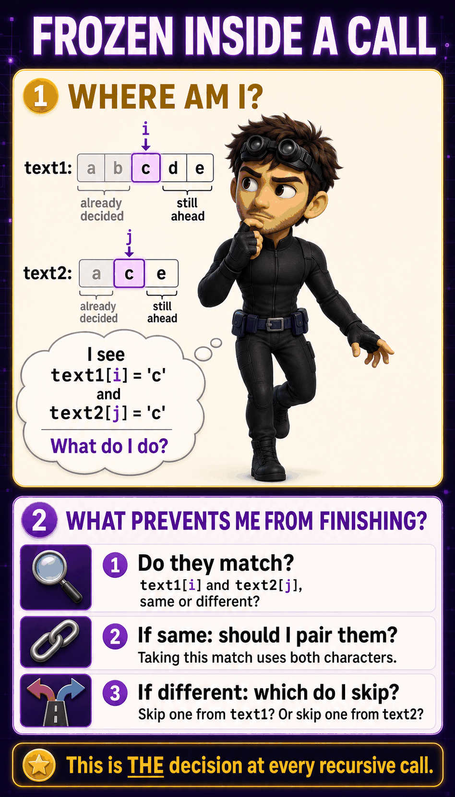
5 What Can I Do With These Two Characters?
Case 1: They match
If text1[i] == text2[j], this pair could be part of the LCS. Should I always take it?
Is there ever a reason to skip a match? No. Taking a match gives +1. Skipping it gives +0 at best. A free match is always worth taking. (This is different from Distinct Subsequences, where skipping a match can lead to more total counts. Here we're maximizing length, so a guaranteed +1 is always optimal.)
lcs(i+1, j+1).
Case 2: They don't match
If text1[i] != text2[j], at least one character is useless right now. Which one should I skip? I don't know.
Skip text1[i]: Maybe it doesn't match anything useful in text2. Move to
lcs(i+1, j).Skip text2[j]: Maybe it doesn't match anything useful in text1. Move to
lcs(i, j+1).I don't know which is better. Try both, keep the better result.
6 Why Only These Choices?
Test every idea a beginner might have
No match? Skip text1[i] OR skip text2[j]. Two branches. Take the max.
7 Watch Each Choice Play Out
Before writing recursion, simulate on a tiny example
text1 = "abcde", text2 = "ace". Start at i=0, j=0.
Action: Take the match. +1.
What changed: Both characters consumed. i becomes 1, j becomes 1.
What remains: lcs("bcde", "ce"). Same problem, smaller input.
What's confusing me? 'b' might match something later in text2, or 'c' might match something later in text1. I don't know which skip is better.
Branch A: skip 'b' → lcs("cde", "ce"). Try text1[2]='c' against text2[1]='c'. Match! +1.
Branch B: skip 'c' → lcs("bcde", "e"). Try text1[1]='b' against text2[2]='e'. No match. Keep skipping...
The Choice Diagram
Current Situation: comparing text1[i] and text2[j]
|
Do they match?
|
+----+----+
| |
YES NO
| |
Take it. Can't use either right now.
+1 Skip one, try both options:
Both +-- Skip text1[i]: lcs(i+1, j)
advance. +-- Skip text2[j]: lcs(i, j+1)
lcs(i+1, Take max.
j+1)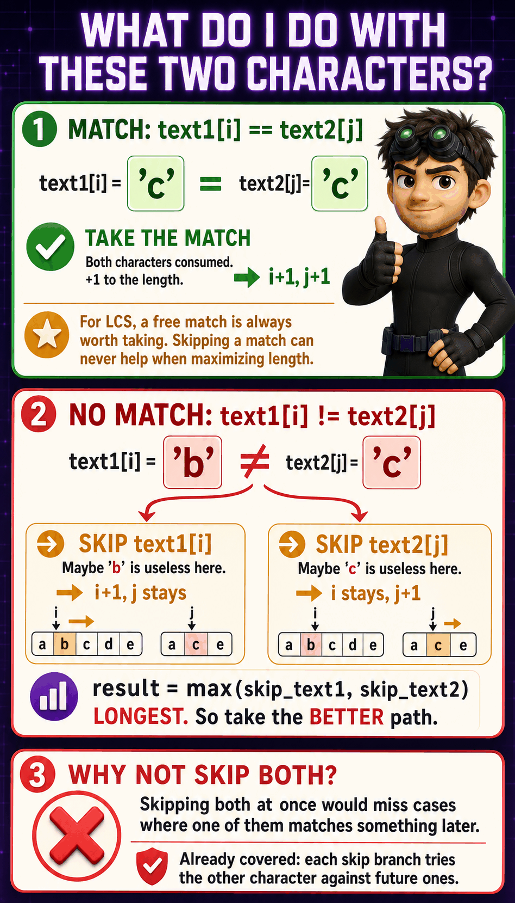
8 What Must I Remember? (The State)
Pause the recursion. Another programmer takes over.
What information do they need to continue exactly where I stopped?
ij9 What Do the Variables Mean?
At i: The character I'm currently looking at.
After i: Still undecided. Future calls handle these.
Incrementing i means: I processed text1[i] (matched or skipped it). Move on.
At j: The character I'm currently looking at.
After j: Still undecided. Future calls handle these.
Incrementing j means: I processed text2[j] (matched or skipped it). Move on.
Faded = decided. Highlighted = current. Normal = future.
The function answers: "What's the LCS of 'cde' and 'ce'?"
10 What Does the Function Promise?
Before writing a single line, state the contract in English
lcs(0, 0). "LCS of the full text1 and full text2."
lcs(i+1, j), it must really answer "LCS of text1[i+1:] and text2[j:]." If it doesn't, the recursion is broken.
11 When Must We Stop? (Base Cases)
If I keep making decisions, when must I eventually stop?
Don't look at the recurrence to find base cases. Ask: "What situation makes the answer trivially obvious?"
Why stop? Can't form any common pair without characters from both strings.
Return:
0.Why 0 and not something else? An empty string shares nothing with any string. The longest common subsequence between "" and anything is length 0.
Why stop? Same reason. Need both strings to form a common subsequence.
Return:
0.Symmetric: running out of either string ends the search. The answer can't grow without characters from both sides.
Why not return -infinity? This isn't an "impossible" situation. It's a normal end. Running out of characters is expected.

12 What Smaller Problem Remains? (Transitions)
For each choice, what exactly changes and why?
i → i+1: text1[i] consumed. It matched. Move past it.j → j+1: text2[j] consumed. Same character, same match. Move past it.
1 + lcs(i+1, j+1)Skip one character. Try both options, keep the better result.
lcs(i+1, j)lcs(i, j+1)

13 How Do We Combine the Results?
What exactly is the original question asking us to compute?
The problem says "longest." That means we want the maximum length. When I don't know which skip is better, I try both and keep whichever gives the larger result.
+1 (I matched one character). Why +1? Each match contributes exactly one character to the length. Why not +2? I only matched one pair. Why not +0? I DID accomplish something: pairing two identical characters.
+0 (no match, no gain). Why not +1? Skipping doesn't create a match. Nothing was paired. The skip branch adds nothing to the length.
max(skip_first, skip_second). Why max and not addition? I'm choosing ONE path, not combining two independent paths. Addition would be for counting all ways (like Distinct Subsequences). Here I want the single best path.
"Longest" →
max()."Count of ways" →
+."Shortest / minimum cost" →
min()."Does any way exist?" →
OR.
14 The Recurrence
Now it writes itself
Every branch has already been justified. The recurrence is just a compact summary:
┌ 0 if i == len(text1) or j == len(text2)
lcs(i,j) =│ 1 + lcs(i+1, j+1) if text1[i] == text2[j]
└ max(lcs(i+1,j), lcs(i,j+1)) otherwiseNothing new here. Each line maps to reasoning we already understand:
15 Brute-Force Code
def lcs_length(text1, text2, i, j):
if i == len(text1) or j == len(text2):
return 0
if text1[i] == text2[j]:
return 1 + lcs_length(text1, text2, i + 1, j + 1)
skip_first = lcs_length(text1, text2, i + 1, j)
skip_second = lcs_length(text1, text2, i, j + 1)
return max(skip_first, skip_second)Does every call preserve the promise?
lcs(i+1, j+1): "LCS of text1[i+1:] and text2[j+1:]." ✓ Both characters consumed.lcs(i+1, j): "LCS of text1[i+1:] and text2[j:]." ✓ Skipped text1[i].lcs(i, j+1): "LCS of text1[i:] and text2[j+1:]." ✓ Skipped text2[j].From Reasoning to Code
| Human Reasoning | Code |
|---|---|
| Function promise: "LCS length of remaining suffixes" | def lcs_length(text1, text2, i, j) returns an int |
| State: two positions | Parameters i and j |
| Stop when either string is exhausted | if i == len(text1) or j == len(text2): return 0 |
| Check if current characters match | if text1[i] == text2[j] |
| Match: +1, both advance | return 1 + lcs_length(..., i+1, j+1) |
| No match: try skipping text1[i] | skip_first = lcs_length(..., i+1, j) |
| No match: try skipping text2[j] | skip_second = lcs_length(..., i, j+1) |
| Goal: "longest" = take the better path | return max(skip_first, skip_second) |
16 Why Every Line Exists
Color-highlighted code walkthrough
def lcs_length(text1, text2, i, j):
if i == len(text1) or j == len(text2):
return 0
if text1[i] == text2[j]:
return 1 + lcs_length(text1, text2, i + 1, j + 1)
skip_first = lcs_length(text1, text2, i + 1, j)
skip_second = lcs_length(text1, text2, i, j + 1)
return max(skip_first, skip_second)Implements the promise: "LCS length of the suffixes starting at i and j." The function takes the state (i, j) as parameters and returns an integer.
Step 11 proved: when either string is exhausted, no more matches are possible. Return 0. If this were removed, the function would crash trying to access text1[i] past the end of the string.
Step 4 discovered: the first question at every call is "do these characters match?" This condition splits the logic into two paths.
Step 12 proved: matching consumes one character from each string (+1), and both pointers advance. Why +1? Each match contributes exactly one character to the length. Why both advance? A match uses one from each side.
Step 12 proved: on a mismatch, skip one character from either string. Each skip adds 0. Why try both? Step 6 eliminated all other options (skip both = wasteful, take mismatch = illegal). These two are all that remain.
Step 13 derived: "longest" means max(). I tried two skip paths, and I want the one that gives the bigger LCS. Why not add them? I'm choosing one path, not counting all paths.
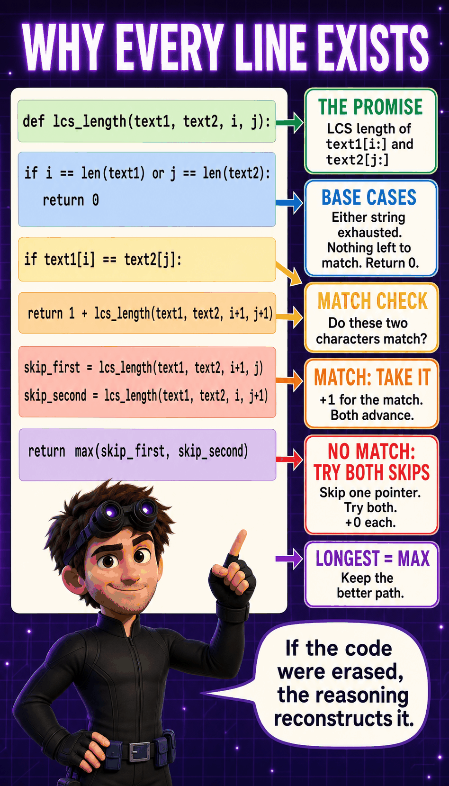
17 Concrete Execution Trace
Follow one example through every call and return
text1 = "ac", text2 = "abc". Expected LCS = "ac", length 2.
lcs(0, 0) text1[0]='a', text2[0]='a'. Match!
return 1 + lcs(1, 1)
lcs(1, 1) text1[1]='c', text2[1]='b'. No match.
skip_first = lcs(2, 1) i=2 == len("ac"). Base case. Return 0.
skip_second = lcs(1, 2) text1[1]='c', text2[2]='c'. Match!
return 1 + lcs(2, 3) i=2 == len("ac"). Base case. Return 0.
= 1 + 0 = 1
max(0, 1) = 1
Return 1.
1 + 1 = 2How does a function with just (i, j) return the final answer?
lcs(2, 3) returns 0 (nothing left). lcs(1, 2) returns 1 (matched 'c'). lcs(1, 1) returns max(0, 1) = 1 (best skip).
lcs(0, 0) gets back 1 from its child, adds its own +1 for matching 'a', and returns 2. The answer builds from the bottom up through return values.
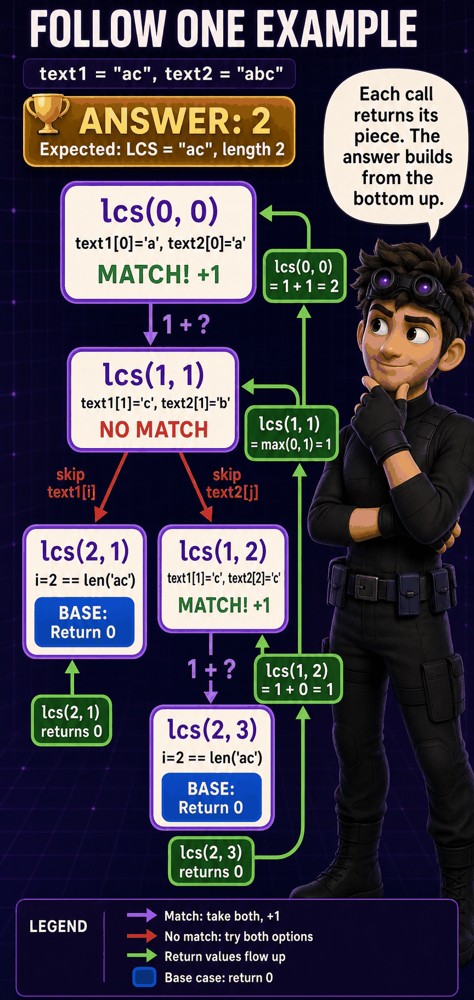
18 Why Is It Slow?
Where does repeated work appear?
Different decision paths can arrive at the same (i, j) pair. Trace the tree on "abcde" / "ace":
lcs("abcde", "ace", 0, 0)
'a'=='a' MATCH: 1 + lcs(1, 1)
'b'!='c': max(lcs(2,1), lcs(1,2))
lcs(2, 1) +
'c'=='c' MATCH |
lcs(1, 2) |
'b'!='e': max( |
lcs(2, 2) ------+ BOTH paths
lcs(1, 3)=0) | reach (2,2)!
+Without caching, the recursion tree has exponential branches. For strings of length m and n, it can be O(2^(m+n)) in the worst case. Each no-match call spawns TWO children, and the tree grows exponentially.
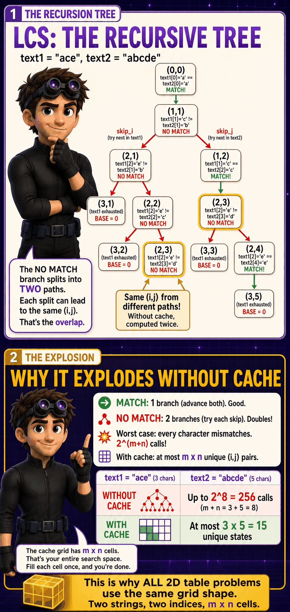
19 Memoization
Same state (i, j) always produces the same answer. Cache it.
(i, j). The state. The minimum unique identifier.def lcs_length(text1, text2, i, j, cache):
if i == len(text1) or j == len(text2):
return 0
if (i, j) in cache:
return cache[(i, j)]
if text1[i] == text2[j]:
result = 1 + lcs_length(text1, text2, i + 1, j + 1, cache)
else:
skip_first = lcs_length(text1, text2, i + 1, j, cache)
skip_second = lcs_length(text1, text2, i, j + 1, cache)
result = max(skip_first, skip_second)
cache[(i, j)] = result
return resultBefore computing, check if (i, j) was already solved. If yes, return immediately. This is what eliminates repeated work.
After computing, save the result before returning. Future calls with the same (i, j) will hit the lookup.

20 Tabulation
Why the table dimensions come from the state
State = (i, j). Two state variables → two table dimensions. i ranges from 0 to len(text1). j ranges from 0 to len(text2). So the table is (len(text1)+1) × (len(text2)+1).
Base cases become initialized cells
First row (i=0): empty text1 prefix. LCS = 0 for any text2 prefix.
First column (j=0): empty text2 prefix. LCS = 0 for any text1 prefix.
Both are already 0 from initialization.
Which cells does each transition depend on?
table[i-1][j-1] (diagonal, for match)table[i-1][j] (up, for skip text1[i])table[i][j-1] (left, for skip text2[j])All three are above or to the left. So filling row by row, left to right guarantees every dependency has already been computed.
The filled table
text1 = "ace", text2 = "abcde":
| "" | a | b | c | d | e | |
|---|---|---|---|---|---|---|
| "" | 0 | 0 | 0 | 0 | 0 | 0 |
| a | 0 | 1 | 1 | 1 | 1 | 1 |
| c | 0 | 1 | 1 | 2 | 2 | 2 |
| e | 0 | 1 | 1 | 2 | 2 | 3 |
Gold cells = matches (came from diagonal + 1). Bottom-right = answer: 3.
The rules at each cell
table[i][j] = table[i-1][j-1] + 1Diagonal + 1. Both chars consumed.
table[i][j] = max(table[i-1][j], table[i][j-1])Best of: skip from text1 (up) or text2 (left).
Walking through one row
j=1 (text2[0]='a'): 'c' != 'a'. max(table[1][1], table[2][0]) = max(1, 0) = 1.
j=2 (text2[1]='b'): 'c' != 'b'. max(table[1][2], table[2][1]) = max(1, 1) = 1.
j=3 (text2[2]='c'): 'c' == 'c'. Match! table[1][2] + 1 = 1 + 1 = 2.
j=4 (text2[3]='d'): 'c' != 'd'. max(table[1][4], table[2][3]) = max(1, 2) = 2.
j=5 (text2[4]='e'): 'c' != 'e'. max(table[1][5], table[2][4]) = max(1, 2) = 2.
The code
def lcs_length(text1, text2):
rows = len(text1)
cols = len(text2)
table = [[0] * (cols + 1) for _ in range(rows + 1)]
for i in range(1, rows + 1):
for j in range(1, cols + 1):
if text1[i - 1] == text2[j - 1]:
table[i][j] = table[i - 1][j - 1] + 1
else:
table[i][j] = max(table[i - 1][j], table[i][j - 1])
return table[rows][cols]All zeros. First row and column = base cases (empty prefix has LCS = 0). No separate initialization loop needed.
Row by row, left to right. Dependencies (up, left, diagonal) are always filled before the current cell.
Same as recursion: match consumes both characters. In the table, "both consumed" means look diagonally (one row up, one column left).
Same as recursion: try both skips. In the table, "skip text1[i]" = look up (shorter text1 prefix). "Skip text2[j]" = look left (shorter text2 prefix).
Bottom-right corner: full text1 prefix, full text2 prefix. The answer to the original problem.

21 Space Optimization
Which previous states are actually needed?
Each cell uses three neighbors: table[i-1][j-1], table[i-1][j], table[i][j-1]. All from the current row or the row directly above. No cell ever looks at two rows back.
curr_row[j-1] is already filled (left). prev_row[j] and prev_row[j-1] are from the previous row (already complete). No conflict.
def lcs_length(text1, text2):
if len(text2) > len(text1):
text1, text2 = text2, text1
cols = len(text2)
prev_row = [0] * (cols + 1)
curr_row = [0] * (cols + 1)
for i in range(1, len(text1) + 1):
for j in range(1, cols + 1):
if text1[i - 1] == text2[j - 1]:
curr_row[j] = prev_row[j - 1] + 1
else:
curr_row[j] = max(prev_row[j], curr_row[j - 1])
prev_row, curr_row = curr_row, [0] * (cols + 1)
return prev_row[cols]22 Common Mistakes
return 1 + lcs(i+1, j) ← WRONGSkipping doesn't match anything. No character was paired. +0, not +1.
Detection: lcs("a", "b") returns 1 instead of 0.
return lcs(i+1, j) + lcs(i, j+1) ← WRONGAddition counts all paths. That's for "number of ways" problems (like Distinct Subsequences). Here we want the single longest, so max().
Detection: lcs("ab", "cd") returns a number greater than the shorter string's length.
return 1 + lcs(i+1, j) or return 1 + lcs(i, j+1) ← WRONGA match consumes one from EACH string. If only i advances, text2[j] remains available and the same character gets matched again later. Double-counting.
Detection: lcs("a", "a") returns more than 1.
if i == len(text1): return 1 ← WRONGRunning out of characters isn't a success. It's the end. No match happened here. Return 0.
Detection: lcs("a", "b") returns 1 instead of 0.
Detection: The table produces different results than the recursive solution on the same input.
text1[i] == text2[j] in the tabulation loop ← WRONGTabulation uses 1-indexed table but 0-indexed strings. The correct comparison is
text1[i-1] == text2[j-1].Detection: Index out of bounds when i equals len(text1).
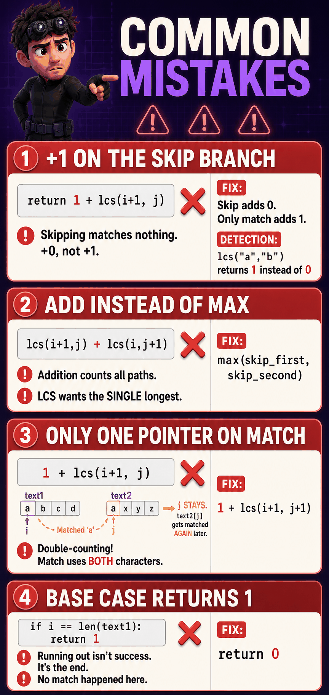
23 Pattern Recognition
"Longest" = optimization. Two strings = two dimensions. Greedy fails because decisions interact. Different decision paths converge on the same state.
On a mismatch, I don't know which character to skip. That uncertainty creates two branches.
Skipping text1[i] then text2[j] and skipping text2[j] then text1[i] both reach lcs(i+1, j+1). Different paths, same destination.
"Longest" → max(). "Count of ways" would mean addition. "Shortest" would mean min().
When I see "two strings" + "order matters" + "optimize", I should consider two-pointer DP with match/skip logic.
Any time I have two sequences and I'm comparing elements pairwise, the structure is: match (diagonal) or skip one (up or left). The only things that change across problems are: what happens on a match (+1 for LCS, +0 for edit distance, use+skip for distinct subsequences), what the combining operation is (max, min, add), and what the base cases are.
24 Rediscover It Six Months Later
How would I reinvent this from scratch?
The 2D Table Family
Two sequences, one grid. Match = diagonal + 1, else max(up, left). Every child is the same grid with different rules.
1 Unique Paths
▶Unique Paths (LeetCode #62)
A robot sits at the top-left corner of an rows x cols grid. It can only move down or right. Return the number of unique paths to reach the bottom-right corner.
rows = 2, cols = 2 → 2
Right-then-down, or down-then-right. The smallest grid with a real choice.
rows = 1, cols = 5 → 1
A single row. The robot can never move down (there's no row below). Only one path: all right.
rows = 5, cols = 1 → 1
A single column. The robot can never move right. Only one path: all down.
rows = 1, cols = 1 → 1
Start and destination are the same cell. Zero moves needed. The "empty path" still counts as one way.
rows = 3, cols = 7 → 28
A wider grid. The count grows fast even though the rules never changed.
1 What Is It Really Asking?
A path is a specific sequence of moves, each one either down or right, starting at (row 0, col 0) and ending at (row rows-1, col cols-1). Two paths are different if the sequence of moves differs anywhere, even if they visit the same number of cells.
Right: move from (row, col) to (row, col+1).
On a 2x2 grid, both paths use one down and one right move, but "right then down" and "down then right" pass through different intermediate cells. They are counted as two separate paths, not one.
2 What Would I Naturally Try?
There's no greedy temptation here, unlike LCS. Every path reaches the same destination no matter which moves get picked, so there's no "wrong" choice to fall for. The natural first attempt is simpler and blunter: "I'll just draw every path and count them."
This works fine for a tiny grid. But grids in the actual problem can be up to 100 x 100. Try scaling up.
3 Where Does That Fail?
18 choose 9 = 48,620. Drawing 48,620 paths by hand isn't just tedious, it's impossible in any reasonable time.Manual counting doesn't fail because of a wrong idea, it fails because of scale. The number of paths grows combinatorially with grid size. Listing every path is fine for a 2x3 grid and impossible for a 10x10 grid, even though the rule ("down or right") never changed.
If I stand at any cell, the number of paths to the destination from that cell doesn't depend on how I got there. It only depends on where I am now. That's a strong hint: define a function of "where I am" and let it call itself on smaller grids.
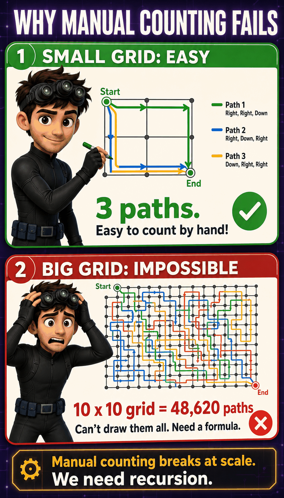
4 What Decision Am I Stuck On?
Imagine the robot is standing on some cell (row, col), somewhere in the middle of the grid. It hasn't reached the destination yet, and it isn't off the grid.
I need to decide: what does the robot do next, standing on this one cell? There's no history to check, no "matching" question to ask. Just: from here, which moves are legal?

5 What Can I Do With This ONE Cell?
Standing on (row, col), not yet at the destination, the robot has exactly two legal next moves.
6 Why Only These Choices?
7 Watch Each Choice Play Out
rows = 2, cols = 3. Start at (row=0, col=0). Destination is (row=1, col=2).
Down: go to (1, 0). Count paths from there.
Right: go to (0, 1). Count paths from there.
What remains: paths(0,0) = paths(1,0) + paths(0,1). Same problem, closer to the destination.
Down: (2, 0) is out of bounds. 0 paths.
Right: go to (1, 1). Count paths from there.
Down: go to (1, 1). Count paths from there.
Right: go to (0, 2). Count paths from there.
Current Situation: robot standing on (row, col)
|
Is this the destination? Is this out of bounds?
|
+----+----+----+
| | |
DEST OUT OF otherwise
| BOUNDS |
return return Try both moves:
1 0 +-- Down: paths(row+1, col)
+-- Right: paths(row, col+1)
Add them together.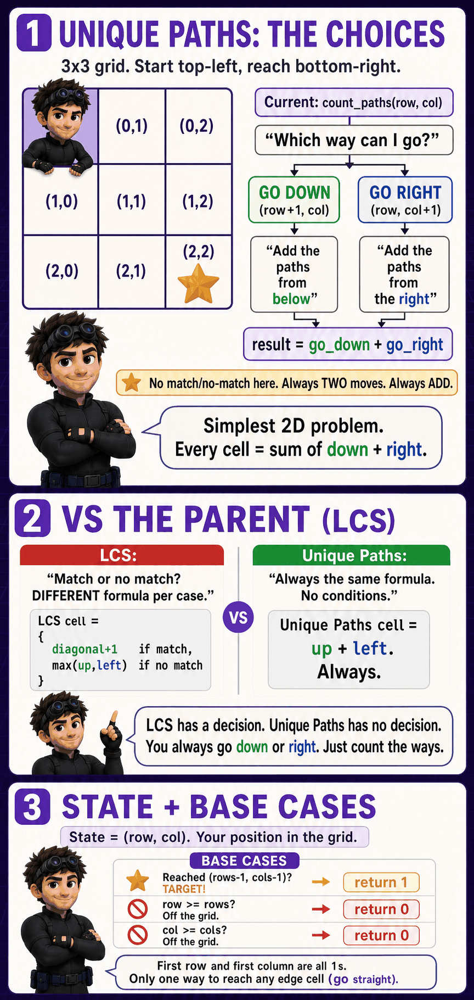
8 What Must I Remember? (The State)
What information do they need to continue exactly where the robot stopped?
rowcol9 What Do the Variables Mean?
At row: The robot's current row.
After row: Rows still ahead, reachable only by moving down.
Incrementing row means: the robot moved down one cell.
At col: The robot's current column.
After col: Columns still ahead, reachable only by moving right.
Incrementing col means: the robot moved right one cell.
The function answers: "How many ways are there to arrange 1 remaining down and 1 remaining right?"
10 What Does the Function Promise?
count_paths(0, 0). "Paths from the very start to the very end."
count_paths(row+1, col) must really answer "paths from (row+1, col) to the destination." If it answered something else, the addition in Step 14 would be meaningless.
11 When Must We Stop? (Base Cases)
Don't look at the recurrence to find base cases. Ask: "What situation makes the answer trivially obvious?"
Why stop? It's already there. No more moves needed. This is one complete, valid path.
Return:
1.Why 1 and not 0? Reaching the destination IS a success, it's one way of arriving. Returning 0 would say "no path exists here," which is false, the robot is standing on a valid endpoint.
Why stop? This cell doesn't exist. No further moves are possible from here.
Return:
0.Why 0 and not 1? An illegal position contributes nothing. It represents a move that shouldn't have been taken, so it adds no paths to the total.
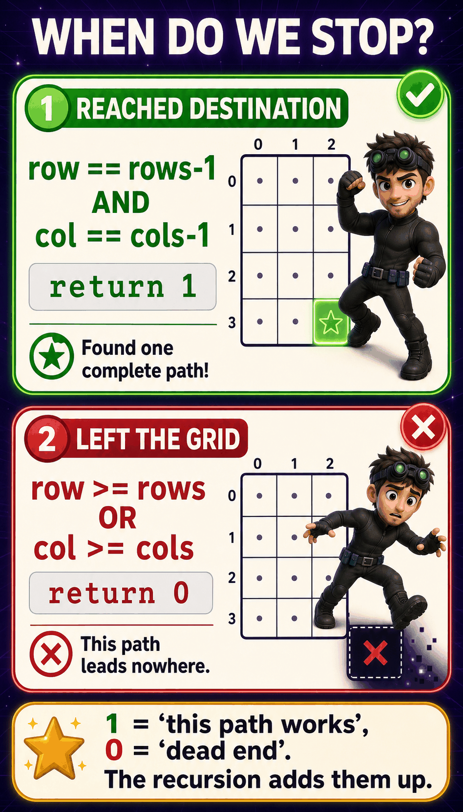
12 What Smaller Problem Remains? (Transitions)
+0 to the count on its own; the count comes entirely from what's reachable afterward.row → row+1: moved down one row.col stays the same: no horizontal movement.
count_paths(row+1, col)+0 directly. Same reasoning: moving doesn't earn anything by itself.row stays the same: no vertical movement.col → col+1: moved right one column.
count_paths(row, col+1)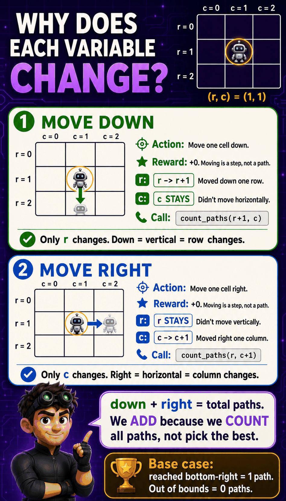
13 How Do We Combine Futures?
The problem says "count the number of unique paths." Both the down-branch and the right-branch lead to a destination, and every path through the down-branch is different from every path through the right-branch (they diverge at this very cell). To count everything, I need both sets of paths, not just the bigger one.
count_paths(row+1, col) paths. Every single one is a distinct, complete path through this cell.
count_paths(row, col+1) paths. Also each distinct and complete.
down + right. Why addition and not max? I'm not choosing the single best path here, I'm counting ALL of them. Every path counted by the down branch is a valid, separate path. Every path counted by the right branch is also valid and separate. None overlap (a path either goes down first or right first from this cell, never both). Add them.
"Longest / shortest / best" →
max() or min(). Choosing one path."Count of ways" →
+. Every branch is a separate valid outcome, none excludes another."Does any way exist?" →
OR.
14 The Recurrence
Every branch has already been justified. The recurrence is just a compact summary:
┌ 1 if row == rows-1 and col == cols-1
count_paths(row,col) =│ 0 if row ≥ rows or col ≥ cols
└ count_paths(row+1,col) + count_paths(row,col+1) otherwiseNothing new here. Each line maps to reasoning we already understand:
15 Brute-Force Code
def count_paths(rows, cols, row, col):
if row == rows - 1 and col == cols - 1:
return 1
if row >= rows or col >= cols:
return 0
move_down = count_paths(rows, cols, row + 1, col)
move_right = count_paths(rows, cols, row, col + 1)
return move_down + move_rightcount_paths(row+1, col): "paths from (row+1, col) to the destination." ✓ The robot moved down.count_paths(row, col+1): "paths from (row, col+1) to the destination." ✓ The robot moved right.| Human Reasoning | Code |
|---|---|
| Function promise: "paths remaining from here to the destination" | def count_paths(rows, cols, row, col) returns an int |
| State: two positions | Parameters row and col |
| Stop when the destination is reached | if row == rows-1 and col == cols-1: return 1 |
| Stop when the robot falls off the grid | if row >= rows or col >= cols: return 0 |
| Otherwise, try moving down | move_down = count_paths(..., row+1, col) |
| Otherwise, try moving right | move_right = count_paths(..., row, col+1) |
| Goal: "count" = keep both, add them | return move_down + move_right |
16 Why Every Line Exists
def count_paths(rows, cols, row, col):
if row == rows - 1 and col == cols - 1:
return 1
if row >= rows or col >= cols:
return 0
move_down = count_paths(rows, cols, row + 1, col)
move_right = count_paths(rows, cols, row, col + 1)
return move_down + move_rightImplements the promise: "paths remaining from (row, col) to the destination." The function takes the state (row, col) plus the fixed dimensions and returns an integer.
Step 11 proved: reaching the destination is one valid path (return 1). Falling off the grid is not a position at all (return 0). If either check were removed or swapped, the function would crash or miscount.
Step 12 proved: moving down changes only row, contributes +0 directly, and defers to a smaller subproblem.
Step 12 proved: moving right changes only col, contributes +0 directly, and defers to a smaller subproblem. Step 7 confirmed these are the only two legal moves left after eliminating everything else.
Step 13 derived: "count" means addition. Down-branch paths and right-branch paths never overlap, so every path is counted exactly once by summing them.
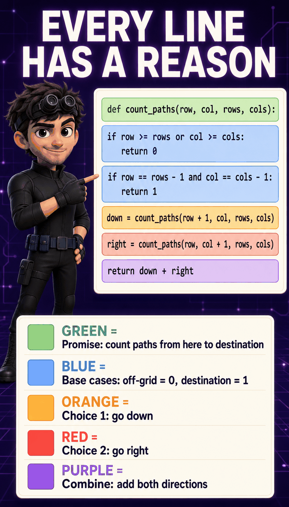
17 Concrete Execution Trace
rows = 2, cols = 3. Expected answer: 3 paths.
count_paths(0, 0) not destination, in bounds.
move_down = count_paths(1, 0)
not destination, in bounds.
move_down = count_paths(2, 0) row=2 ≥ rows=2. Return 0.
move_right = count_paths(1, 1)
not destination, in bounds.
move_down = count_paths(2, 1) row=2 ≥ rows=2. Return 0.
move_right = count_paths(1, 2) row==1==rows-1, col==2==cols-1. Return 1.
0 + 1 = 1
0 + 1 = 1
move_right = count_paths(0, 1)
not destination, in bounds.
move_down = count_paths(1, 1) (recomputed! same call as above) → 1
move_right = count_paths(0, 2)
not destination, in bounds.
move_down = count_paths(1, 2) (recomputed again!) → Return 1.
move_right = count_paths(0, 3) col=3 ≥ cols=3. Return 0.
1 + 0 = 1
1 + 1 = 2
1 + 2 = 3count_paths(1,2) returns 1 (it's the destination). count_paths(1,1) returns 0+1=1 (its two branches summed).
count_paths(0,0) gets 1 back from its down-branch and 2 back from its right-branch, and returns 1+2=3. The answer builds from the bottom up through return values, exactly like LCS, just with + instead of max.

18 Why Is It Slow?
The trace above already showed it: count_paths(1, 1) got computed twice, once from count_paths(1, 0)'s right-branch, and once from count_paths(0, 1)'s down-branch. count_paths(1, 2) got computed twice as well.
In general, cell (row, col) is reachable from the start by any interleaving of row down-moves and col right-moves. All of those different histories collapse into the same recursive call. Without caching, this is exactly the combinatorial explosion from Step 4, showing up again inside the recursion tree, with branching that can reach O(2^(rows+cols)) calls in the worst case.
19 Memoization
Same state (row, col) always produces the same answer. Cache it.
(row, col). The state. The minimum unique identifier.def count_paths(rows, cols, row, col, cache):
if row == rows - 1 and col == cols - 1:
return 1
if row >= rows or col >= cols:
return 0
if (row, col) in cache:
return cache[(row, col)]
move_down = count_paths(rows, cols, row + 1, col, cache)
move_right = count_paths(rows, cols, row, col + 1, cache)
cache[(row, col)] = move_down + move_right
return cache[(row, col)]Before computing, check if (row, col) was already solved. If yes, return immediately. This is what eliminates the duplicate work seen in Step 18.
After computing, save the result before returning. Future calls with the same (row, col) will hit the lookup instead of recomputing.
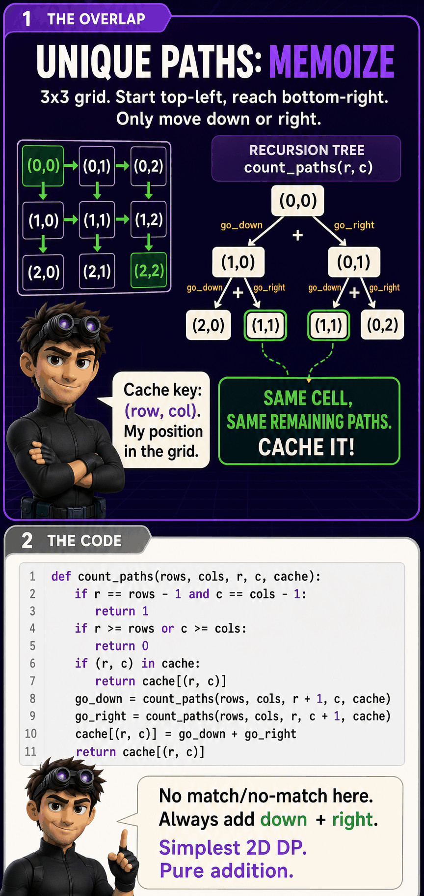
20 Tabulation
State = (row, col). Two state variables → two table dimensions. The table is rows × cols, exactly the grid itself.
First row (row=0): the robot can only have arrived by moving right the whole way. Exactly 1 way.
First column (col=0): the robot can only have arrived by moving down the whole way. Exactly 1 way.
Both get initialized to 1, not computed from a formula.
table[row-1][col] (up, arriving by a final down move)table[row][col-1] (left, arriving by a final right move)Both are above or to the left. So filling row by row, left to right guarantees every dependency has already been computed.
rows = 3, cols = 3:
| col 0 | col 1 | col 2 | |
|---|---|---|---|
| row 0 | 1 | 1 | 1 |
| row 1 | 1 | 2 | 3 |
| row 2 | 1 | 3 | 6 |
Gold border cells = base cases (first row/column, all 1s). Bottom-right = answer: 6.
table[row][col] = table[row-1][col] + table[row][col-1]Up + left. No conditions to check, no match/no-match branch, this is the simplest rule in the whole 2D table family.
col=0: First column. Base case. 1.
col=1: table[1][1] + table[2][0] = 2 + 1 = 3.
col=2: table[1][2] + table[2][1] = 3 + 3 = 6.
def count_paths(rows, cols):
table = [[1] * cols for _ in range(rows)]
for row in range(1, rows):
for col in range(1, cols):
table[row][col] = table[row - 1][col] + table[row][col - 1]
return table[rows - 1][cols - 1]Every cell starts at 1, not 0. This looks unusual, but it's a shortcut: the first row and first column need to be 1 (Step 20's base cases), and initializing everything to 1 handles those automatically. The loop below then overwrites every cell that isn't in the first row or column.
Row by row, left to right, starting from row 1 and col 1 (skipping the pre-filled base row/column). Dependencies (up, left) are always filled before the current cell.
Every interior cell is up + left. No conditions. This mirrors the recursion's
move_down + move_right, just viewed from the opposite direction (arriving instead of leaving).
Bottom-right corner: the destination. The answer to the original problem.
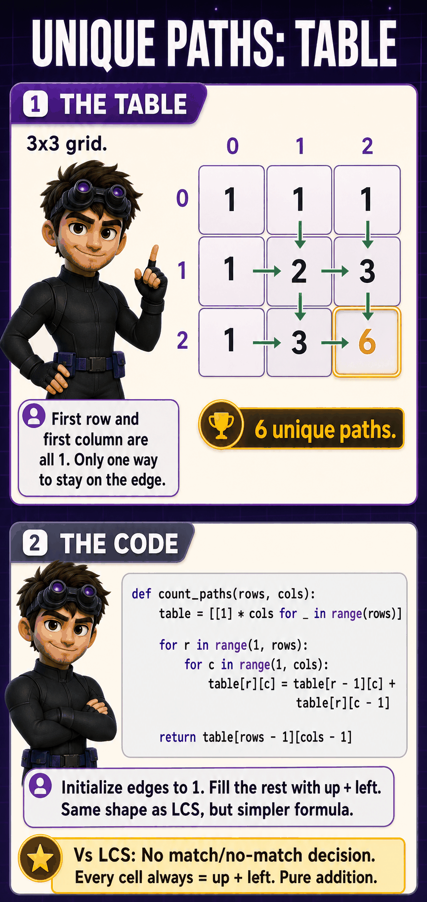
21 Space Optimization
Each cell uses two neighbors: table[row-1][col] and table[row][col-1]. Both come from the current row or the row directly above. No cell ever looks two rows back.
table[row][col-1] is just "the value I already wrote earlier in this same pass" (still in the array, to the left). table[row-1][col] is "the value from the previous row" (still sitting at that index, not yet overwritten). Space drops from O(rows × cols) to O(cols).
def count_paths(rows, cols):
row_values = [1] * cols
for row in range(1, rows):
for col in range(1, cols):
row_values[col] = row_values[col] + row_values[col - 1]
return row_values[cols - 1]row_values[col] holds last row's value (up). row_values[col-1] already got overwritten earlier in this same inner loop pass, so it holds this row's value (left). Both pieces needed are exactly where the algorithm expects them, no extra array required.
22 Common Mistakes
if row == rows-1 and col == cols-1: return 0 ← WRONGReaching the destination is a successful path, not a dead end. It must contribute 1 to the total, not 0.
Detection: count_paths on a 1x1 grid returns 0 instead of 1.
return max(move_down, move_right) ← WRONGmax() picks the single best path, which is what "longest" problems like LCS need. This problem says "count," meaning every path matters, not just the biggest branch. Use addition.
Detection: count_paths on a 3x3 grid returns 3 (the size of the larger branch) instead of 6.
if row >= rows or col >= cols: return 1 ← WRONGAn out-of-bounds cell isn't a valid position, let alone a valid path. It must contribute 0, not 1. Returning 1 here silently inflates the count for every path that goes off the edge.
Detection: count_paths on any grid larger than 1x1 returns more than the correct answer.
if row == rows and col == cols: return 1 ← WRONGThe destination is
(rows-1, cols-1), the last valid index, not (rows, cols), which is already out of bounds. This condition would never trigger, since the out-of-bounds check fires first.Detection: Function always returns 0, even for a 1x1 grid.
Detection: The table produces different results than the recursive solution on the same grid.
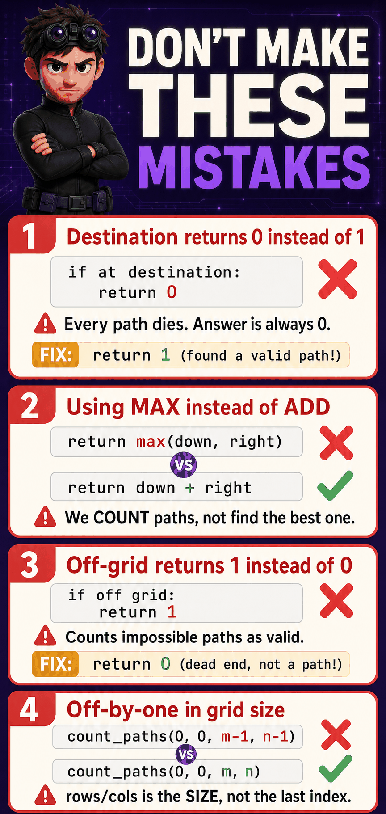
23 Pattern Recognition
"Count the number of ways" = summing over branches. Movement on a grid with two degrees of freedom = two dimensions. Different move orders converge on the same cell.
Actually, none did, that's the point. Unlike LCS, both moves are always tried; there was never a "which is better" question. Branching here comes purely from wanting to count all possibilities, not from ambiguity.
Any cell (row, col) is reachable by many different interleavings of down and right moves. All of them arrive at the same state, so they all reuse the same cached answer.
"Number of ways" → addition. "Longest / shortest" would mean max/min. "Does a way exist" would mean OR.
When I see "grid" + "movement rules" + "count the ways", I should consider a 2D table where each cell sums its valid incoming neighbors.
This is the simplest member of the 2D table family: no match/no-match split, no min/max decision, just addition of neighbors. It's also the combinatorics connection: the first row and column of 1s, with each interior cell as the sum of its neighbors, is exactly Pascal's triangle rotated 45 degrees. Obstacle-grid variants (LeetCode #63) just add a third condition: if the cell is blocked, force it to 0 regardless of its neighbors.
24 Rediscover It Six Months Later
2 Edit Distance
▶The Problem
Given two strings word1 and word2, return the minimum number of operations required to convert word1 into word2. You may insert a character, delete a character, or replace a character. Each operation costs 1.
word1 = "horse", word2 = "ros" → 3
One replace, two deletes.
word1 = "intention", word2 = "execution" → 5
Three replaces, one delete, one insert.
word1 = "abc", word2 = "abc" → 0
Identical strings. Nothing to change.
word1 = "", word2 = "abc" → 3
Empty string. Every character of word2 must be inserted.
word1 = "a", word2 = "b" → 1
Single character, different. One replace.
1 What Is It Really Asking?
Every operation, no matter which one, costs exactly 1. A word with five wrong characters isn't automatically five operations. The question is: what is the fewest operations that turn word1 into word2, using any mix of these three moves in any order?
2 What Would I Naturally Try?
Most beginners think: "Walk through both strings left to right at the same time. Where the characters already match, do nothing. Where they don't, replace the word1 character to fix it."
Same length, same positions lining up, one mismatch fixed with one replace. It feels like the whole problem. But now try two strings of different lengths.
3 Where Does That Fail?
Greedy assumed word1 and word2 stay aligned position-by-position: word1[i] always compared against word2[i]. But once word1 and word2 have different lengths, that alignment breaks. Replacing 'c' with 'd' locked in a rigid one-to-one pairing that wasn't the cheapest way to line the strings up. Skipping ahead in word2 (inserting) would have realigned things for free.
Since I can't commit to "always replace" on a mismatch, I need to explore: "What if I replace here? What if I delete? What if I insert?" Each choice changes the alignment differently. That means branching, which means recursion.

4 What Decision Am I Stuck On?
Imagine I'm at position i in word1 and position j in word2. I see two characters: word1[i] and word2[j].
I need to decide: what do I do about word1[i] and word2[j]? The answer depends on whether they're already the same character. If they match, is there ever a reason to spend an operation here? If they don't match, which operation fixes it cheapest? That's the natural first check: do these two characters already agree?
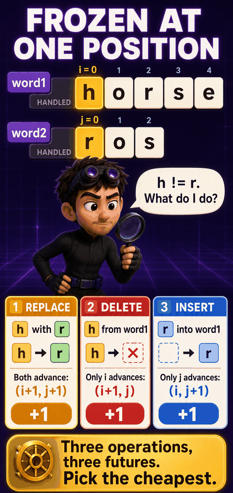
5 What Can I Do With These Two Characters?
If word1[i] == word2[j], word1 already has the right character sitting at position i. Is there ever a reason to spend an operation here anyway? No. Replacing a correct character with itself is a wasted operation. Inserting or deleting around a correct character just to redo it later never helps. A free match is always worth taking for free.
min_edits(i+1, j+1).
If word1[i] != word2[j], something has to be spent here. But which operation? I don't know yet, so consider all three.
Replace word1[i] with word2[j]. Move to
min_edits(i+1, j+1).Delete word1[i] entirely. Move to
min_edits(i+1, j).Insert word2[j] into word1. Move to
min_edits(i, j+1).I don't know which is cheapest overall. Try all three, keep the smallest result.
6 Why Only These Choices?
No match? Replace, delete, or insert. Three branches. Take the minimum.
7 Watch Each Choice Play Out
word1 = "ab", word2 = "adb". Start at i=0, j=0.
Action: Do nothing. +0.
What changed: Both characters handled. i becomes 1, j becomes 1.
What remains: min_edits("b", "db"). Same problem, smaller input.
Replace: swap 'b' for 'd' → word1 becomes "ad". But word2 is "adb" — that still leaves a 'b' unaccounted for. Cost so far 1, then need 1 more insert. Total from here: 2.
Delete: drop 'b' from word1 → word1 becomes "a". Still need to produce "db" in word2. Cost so far 1, then 2 more inserts needed. Total from here: 3.
Insert: insert 'd' before position i → word1 becomes "adb" conceptually so far, word2[1]='d' is now produced, and word1[1]='b' still sits ready to compare against word2[2]='b'. Cost so far 1, and 'b' vs 'b' next is a free match. Total from here: 1.
Current Situation: comparing word1[i] and word2[j]
|
Do they match?
|
+----+----+
| |
YES NO
| |
Do Spend 1 operation. Try all three:
nothing. +-- Replace: 1 + min_edits(i+1, j+1)
+0 +-- Delete: 1 + min_edits(i+1, j)
Both +-- Insert: 1 + min_edits(i, j+1)
advance. Take min.
min_edits
(i+1,j+1)
8 What Must I Remember? (The State)
What information do they need to continue exactly where I stopped?
ij9 What Do the Variables Mean?
At i: The character I'm currently deciding about.
After i: Still original word1, untouched. Future calls handle these.
Incrementing i means: word1[i] has been dealt with, either it matched, got replaced, or got deleted.
At j: The character I'm currently trying to produce.
After j: Not yet produced. Future calls handle these.
Incrementing j means: word2[j] has been produced, either by a match, a replace, or an insert.
Faded = decided. Highlighted = current. Normal = future.
The function answers: "What's the minimum cost to turn 'rse' into 'os'?"
10 What Does the Function Promise?
min_edits(0, 0). "Minimum operations to turn the full word1 into the full word2."
min_edits(i+1, j), it must really answer "minimum ops to turn word1[i+1:] into word2[j:]." If it doesn't, the recursion is broken.
11 When Must We Stop? (Base Cases)
Don't look at the recurrence to find base cases. Ask: "What situation makes the answer trivially obvious?"
Why stop? There's nothing left to match, delete, or replace. The only remaining move is to insert whatever's left of word2.
Return:
len(word2) - j.Why that number and not 0? Unlike LCS, running out of one string doesn't end the work. Every leftover character in word2 still needs a dedicated insert.
Why stop? There's nothing left to produce. Any remaining word1 characters are just extra baggage that must be removed.
Return:
len(word1) - i.Every leftover character in word1 needs a dedicated delete.
What if both i and len(word1) and j and len(word2) hit at once? Then
len(word2) - j = 0 or len(word1) - i = 0. Either base case correctly returns 0, since there's nothing left on both sides.

12 What Smaller Problem Remains? (Transitions)
i → i+1: word1[i] is confirmed correct. Move past it.j → j+1: word2[j] is confirmed produced. Move past it.
min_edits(i+1, j+1)Spend one operation. Try all three, keep the cheapest result.
1 + min_edits(i+1, j+1)1 + min_edits(i+1, j)1 + min_edits(i, j+1)
13 How Do We Combine the Results?
The problem says "minimum number of operations." That means the smallest total cost. When I don't know which of the three moves is cheapest, I try all of them and keep whichever gives the smaller result.
+0 (nothing to fix). Why not +1? No operation happened. Charging a cost for doing nothing would overcount.
+1 (one operation spent). Why exactly 1, never more, never less? The problem defines every operation as unit cost, regardless of which one.
min(replace, delete, insert). Why min and not max, and not addition? I'm choosing ONE sequence of edits, not summing three separate attempts, and I want the cheapest one, not the most expensive. "Minimum operations" is a direct instruction to minimize.
"Longest / most" →
max()."Count of ways" →
+."Shortest / minimum cost / fewest operations" →
min()."Does any way exist?" →
OR.
14 The Recurrence
Every branch has already been justified. The recurrence is just a compact summary:
┌ len(word2) - j if i == len(word1)
│ len(word1) - i if j == len(word2)
min_edits(i,j)=│ min_edits(i+1, j+1) if word1[i] == word2[j]
└ 1 + min(min_edits(i+1,j+1),
min_edits(i+1,j),
min_edits(i,j+1)) otherwiseNothing new here. Each line maps to reasoning we already understand:
15 Brute-Force Code
def min_edits(word1, word2, i, j):
if i == len(word1):
return len(word2) - j
if j == len(word2):
return len(word1) - i
if word1[i] == word2[j]:
return min_edits(word1, word2, i + 1, j + 1)
replace = min_edits(word1, word2, i + 1, j + 1)
delete = min_edits(word1, word2, i + 1, j)
insert = min_edits(word1, word2, i, j + 1)
return 1 + min(replace, delete, insert)min_edits(i+1, j+1): "min ops for word1[i+1:] into word2[j+1:]." ✓ Both characters consumed (match or replace).min_edits(i+1, j): "min ops for word1[i+1:] into word2[j:]." ✓ word1[i] deleted, word2[j] still pending.min_edits(i, j+1): "min ops for word1[i:] into word2[j+1:]." ✓ word2[j] inserted, word1[i] still pending.| Human Reasoning | Code |
|---|---|
| Function promise: "min operations for remaining suffixes" | def min_edits(word1, word2, i, j) returns an int |
| State: two positions | Parameters i and j |
| Stop when word1 is exhausted: insert the rest of word2 | if i == len(word1): return len(word2) - j |
| Stop when word2 is exhausted: delete the rest of word1 | if j == len(word2): return len(word1) - i |
| Check if current characters match | if word1[i] == word2[j] |
| Match: free, both advance | return min_edits(..., i+1, j+1) |
| No match: try replace | replace = min_edits(..., i+1, j+1) |
| No match: try delete | delete = min_edits(..., i+1, j) |
| No match: try insert | insert = min_edits(..., i, j+1) |
| Goal: "minimum" = cheapest path, +1 for the operation spent | return 1 + min(replace, delete, insert) |
16 Why Every Line Exists
def min_edits(word1, word2, i, j):
if i == len(word1):
return len(word2) - j
if j == len(word2):
return len(word1) - i
if word1[i] == word2[j]:
return min_edits(word1, word2, i + 1, j + 1)
replace = min_edits(word1, word2, i + 1, j + 1)
delete = min_edits(word1, word2, i + 1, j)
insert = min_edits(word1, word2, i, j + 1)
return 1 + min(replace, delete, insert)The signature implements the promise: "min operations for the suffixes starting at i and j." The match return statement is the free path: nothing spent, both pointers move on together.
Step 11 proved: when word1 runs out, insert whatever's left of word2; when word2 runs out, delete whatever's left of word1. If these were removed, the function would crash indexing past the end of a string. The insert branch (blue further down) reuses the same "produce word2[j] without consuming word1[i]" idea, just one character at a time.
Step 5 discovered: the first question at every call is "do these characters already agree?" This condition splits the logic into the free path and the pay-to-fix path.
Step 12 proved: replace fixes both positions in one move, so both pointers advance together, exactly like a match, but with a cost of 1 instead of 0.
Step 12 proved: deleting removes a word1 character without producing anything in word2. Only i advances.
Step 13 derived: "minimum operations" means min(). I computed three possible costs and I want the smallest one, plus the 1 I'm spending on whichever move I pick. Why not average or add them? I'm choosing one path forward, not summing three independent attempts.

17 Concrete Execution Trace
word1 = "ab", word2 = "adb". Expected minimum = 1 (insert 'd').
min_edits(0, 0) word1[0]='a', word2[0]='a'. Match!
return min_edits(1, 1)
min_edits(1, 1) word1[1]='b', word2[1]='d'. No match.
replace = min_edits(2, 2) i=2 == len("ab"). Base case. Return len(word2)-j = 3-2 = 1.
delete = min_edits(2, 1) i=2 == len("ab"). Base case. Return len(word2)-j = 3-1 = 2.
insert = min_edits(1, 2) word1[1]='b', word2[2]='b'. Match!
return min_edits(2, 3) i=2 == len("ab"). Base case. Return len(word2)-j = 3-3 = 0.
= 0
1 + min(1, 2, 0) = 1 + 0 = 1
Return 1.
Final answer: 1min_edits(2, 3) returns 0 (both strings exhausted together). min_edits(1, 2) returns 0 (matched 'b' for free). min_edits(1, 1) returns 1 (cheapest of replace=1, delete=2, insert=0, plus the 1 spent to get there).
min_edits(0, 0) gets back 1 from its child, adds nothing extra since 'a' matched for free, and returns 1. The answer builds from the bottom up through return values, exactly like LCS, just with min instead of max and costs instead of gains.

18 Why Is It Slow?
Every mismatch spawns three children instead of two, so the tree grows even faster than LCS. And different decision paths can still arrive at the same (i, j) pair. Trace part of the tree on "horse" / "ros":
min_edits("horse", "ros", 0, 0)
'h'!='r': 1 + min(
min_edits(1, 1) ← replace path +
min_edits(1, 0) ← delete path |
min_edits(0, 1)) ← insert path |
|
min_edits(1, 1) branches again on 'o'!='r' -> |
one of its children can land back on |
the SAME (i, j) that min_edits(1, 0) |
or min_edits(0, 1) also reaches +Without caching, every mismatch spawns THREE recursive calls instead of LCS's two. For strings of length m and n, the recursion tree can be O(3^(m+n)) in the worst case, worse than LCS's O(2^(m+n)), because there's one more branch at every mismatch.
19 Memoization
Same state (i, j) always produces the same answer. Cache it.
(i, j). The state. The minimum unique identifier.def min_edits(word1, word2, i, j, cache):
if i == len(word1):
return len(word2) - j
if j == len(word2):
return len(word1) - i
if (i, j) in cache:
return cache[(i, j)]
if word1[i] == word2[j]:
result = min_edits(word1, word2, i + 1, j + 1, cache)
else:
replace = min_edits(word1, word2, i + 1, j + 1, cache)
delete = min_edits(word1, word2, i + 1, j, cache)
insert = min_edits(word1, word2, i, j + 1, cache)
result = 1 + min(replace, delete, insert)
cache[(i, j)] = result
return resultBefore computing, check if (i, j) was already solved. If yes, return immediately. This is what eliminates repeated work, and there's more of it to eliminate here than in LCS, since each mismatch fans out into three children instead of two.
After computing, save the result before returning. Future calls with the same (i, j) will hit the lookup.

20 Tabulation
State = (i, j). Two state variables → two table dimensions. i ranges from 0 to len(word1). j ranges from 0 to len(word2). So the table is (len(word1)+1) × (len(word2)+1).
First row (i=0): empty word1 prefix. Turning "" into word2[:j] takes exactly j inserts. So table[0][j] = j.
First column (j=0): empty word2 prefix. Turning word1[:i] into "" takes exactly i deletes. So table[i][0] = i.
Unlike LCS, these edges are NOT all zero. They count straight up from 0 to the row or column index.
table[i-1][j-1] (diagonal, for match or replace)table[i-1][j] (up, for delete)table[i][j-1] (left, for insert)All three are above or to the left. So filling row by row, left to right guarantees every dependency has already been computed.
word1 = "ros", word2 = "horse":
| "" | h | o | r | s | e | |
|---|---|---|---|---|---|---|
| "" | 0 | 1 | 2 | 3 | 4 | 5 |
| r | 1 | 1 | 2 | 2 | 3 | 4 |
| o | 2 | 2 | 1 | 2 | 3 | 4 |
| s | 3 | 3 | 2 | 2 | 2 | 3 |
Gold cells = matches (came straight from the diagonal, no +1). Bottom-right = answer: 3.
table[i][j] = table[i-1][j-1]Diagonal, no +1. Free, both chars consumed.
table[i][j] = 1 + min(diag, up, left)Cheapest of: replace (diagonal), delete (up), insert (left).
j=1 (word2[0]='h'): 'o' != 'h'. 1 + min(table[1][0], table[1][1], table[2][0]) = 1 + min(1, 1, 2) = 2.
j=2 (word2[1]='o'): 'o' == 'o'. Match! table[1][1] = 1.
j=3 (word2[2]='r'): 'o' != 'r'. 1 + min(table[1][2], table[1][3], table[2][2]) = 1 + min(2, 2, 1) = 2.
j=4 (word2[3]='s'): 'o' != 's'. 1 + min(table[1][3], table[1][4], table[2][3]) = 1 + min(2, 3, 2) = 3.
j=5 (word2[4]='e'): 'o' != 'e'. 1 + min(table[1][4], table[1][5], table[2][4]) = 1 + min(3, 4, 3) = 4.
def min_edits(word1, word2):
rows = len(word1)
cols = len(word2)
table = [[0] * (cols + 1) for _ in range(rows + 1)]
for i in range(rows + 1):
table[i][0] = i
for j in range(cols + 1):
table[0][j] = j
for i in range(1, rows + 1):
for j in range(1, cols + 1):
if word1[i - 1] == word2[j - 1]:
table[i][j] = table[i - 1][j - 1]
else:
table[i][j] = 1 + min(
table[i - 1][j - 1],
table[i - 1][j],
table[i][j - 1]
)
return table[rows][cols]Not all zeros this time. All zeros first, then the edges are overwritten with the base cases.
table[i][0] = i and table[0][j] = j are the base cases written directly into the table, not initialized to 0 like LCS. Then row by row, left to right, so dependencies (up, left, diagonal) are always filled before the current cell.
Same as recursion: a match is free. In the table, "free and both consumed" means copy the diagonal value exactly, no addition.
Same as recursion: try all three operations. In the table, "replace" = diagonal, "delete" = up, "insert" = left. Add 1 for whichever is cheapest.
Bottom-right corner: full word1, full word2. The answer to the original problem.
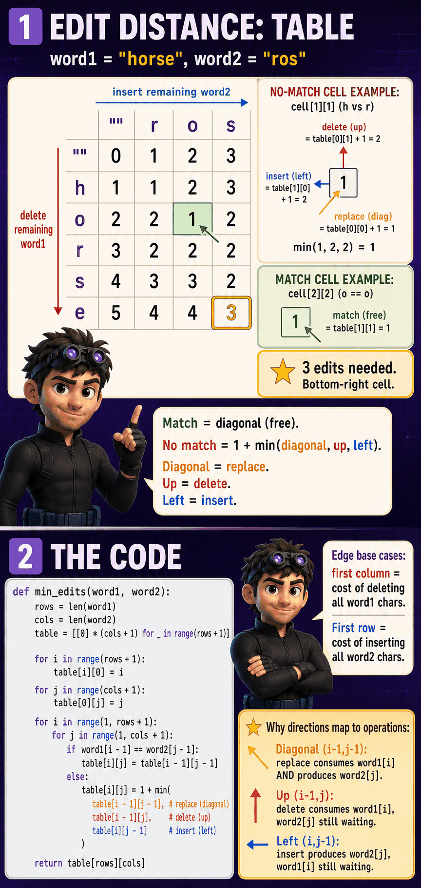
21 Space Optimization
Each cell uses three neighbors: table[i-1][j-1], table[i-1][j], table[i][j-1]. All from the current row or the row directly above. No cell ever looks at two rows back.
curr_row[0] must be set to i at the start of every row, since that's the base case for an empty word2 prefix at this word1 length. It's not carried over from prev_row.
def min_edits(word1, word2):
cols = len(word2)
prev_row = list(range(cols + 1))
curr_row = [0] * (cols + 1)
for i in range(1, len(word1) + 1):
curr_row[0] = i
for j in range(1, cols + 1):
if word1[i - 1] == word2[j - 1]:
curr_row[j] = prev_row[j - 1]
else:
curr_row[j] = 1 + min(prev_row[j - 1], prev_row[j], curr_row[j - 1])
prev_row, curr_row = curr_row, [0] * (cols + 1)
return prev_row[cols]22 Common Mistakes
replace = min_edits(i+1, j+1) used directly as the final answer, without adding 1 ← WRONGEvery operation costs 1. Forgetting to add it means the function counts matches but not edits.
Detection: min_edits("a", "b") returns 0 instead of 1.
return 1 + max(replace, delete, insert) ← WRONGThe problem asks for the minimum number of operations, the cheapest path. Max would find the most expensive way to do it, backwards.
Detection: min_edits("horse", "ros") returns something far larger than 3, often close to the combined string length.
if i == len(word1): return 0 ← WRONGUnlike LCS, running out of word1 doesn't mean "nothing more to do." If word2 still has characters left, each one needs a dedicated insert. The correct base case is
len(word2) - j, not 0.Detection: min_edits("", "abc") returns 0 instead of 3.
insert = min_edits(i+1, j) or delete = min_edits(i, j+1) ← WRONG (swapped)Delete removes a word1 character, so i advances (
min_edits(i+1, j)). Insert adds a word2 character into word1, so j advances (min_edits(i, j+1)). Swapping them makes the recursion track the wrong string's progress.Detection: min_edits("abc", "abdc") stops returning 1 and starts returning something inconsistent across similar insert-only cases.
return 1 + min_edits(i+1, j+1) when word1[i] == word2[j] ← WRONGA match needs no operation. Charging for it inflates the answer even on identical strings.
Detection: min_edits("abc", "abc") returns 3 instead of 0.
table[i][0] and table[0][j] at 0 (LCS-style) instead of setting them to i and j.Detection: The tabulated answer is consistently lower than the recursive answer on the same input, especially when the strings differ in length.
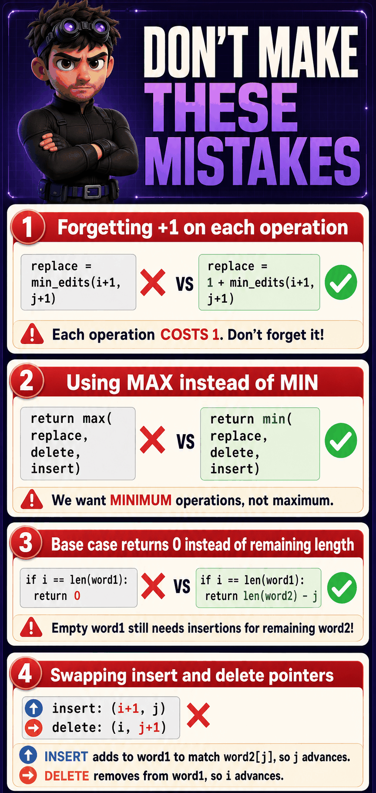
23 Pattern Recognition
"Minimum number of operations" = optimization. Two strings = two dimensions. Greedy fails because a fix at one position changes what's optimal at the next. Different decision paths converge on the same state.
On a mismatch, I don't know whether replace, delete, or insert is cheapest overall. That uncertainty creates three branches instead of LCS's two.
Deleting then matching and inserting-then-matching can both land on the same (i, j) as a direct replace. Different edit sequences, same remaining subproblem.
"Minimum" → min(). "Longest" would mean max(). "Count of ways" would mean addition.
When I see "two strings" + "transform one into the other" + "minimum operations", I should consider two-pointer DP with a free match and a min() over several unit-cost edits on mismatch.
Edit Distance is the same grid as LCS, with three differences: match is free instead of +1, the combining operator is min instead of max, and mismatch spawns three choices instead of two because there are three operations instead of two skips. The base cases flip too: running out of a string here still costs work (insert or delete the rest), where in LCS it costs nothing.
24 Rediscover It Six Months Later
3 Interleaving String
▶The Problem
Interleaving String (LeetCode #97)
Given strings s1, s2, and s3, determine if s3 can be formed by interleaving s1 and s2. Interleaving means: take characters from s1 and s2, keeping the relative order within each string, so that they combine into s3.
s1 = "aab", s2 = "axy", s3 = "abxy" → False
Even though every letter of s3 appears somewhere in s1 or s2, there is no way to interleave them in order and land on exactly "abxy".
s1 = "", s2 = "abc", s3 = "abc" → True
An empty s1 contributes nothing. s3 must equal s2 exactly.
s1 = "", s2 = "", s3 = "" → True
Nothing to interleave, nothing to form. Trivially true.
s1 = "ab", s2 = "c", s3 = "abcd" → False
len(s1) + len(s2) = 3, but len(s3) = 4. The lengths don't even add up, so no interleaving can possibly work.
1 What Is It Really Asking?
What does "interleaving" actually require?
Strip away the vocabulary. The real question is: can I pick characters from s1 and s2, one at a time, and lay them down in some order, such that the result is exactly s3?
Every character of s3 needs a source
s3 is built one character at a time. Every single character in s3 must be explained: did it come from the next unused character of s1, or the next unused character of s2? There's no third option, and no character can be skipped or invented.
2 What Would I Naturally Try?
The greedy instinct
Most beginners think: "Walk through s3 left to right. For each position, whichever string's next character matches, take it from there."
Greedy works here because it was never actually tested. Now try an input where both strings match the same character at the same time.
3 Where Does That Fail?
What went wrong?
At s3[0] and s3[1], BOTH s1 and s2 offered a matching 'a'. Greedy committed to s1 both times, an irreversible decision. By the time it reached s3[2] = 'y', it had already used up s1's "aa" and had no way back to try s2 first.
Why brute force becomes necessary
Since a single guess can silently doom the rest of the string, we need to explore: "What if this character came from s1? What if it came from s2?" Whenever both are possible, both paths must be tried. That means branching, which means recursion.

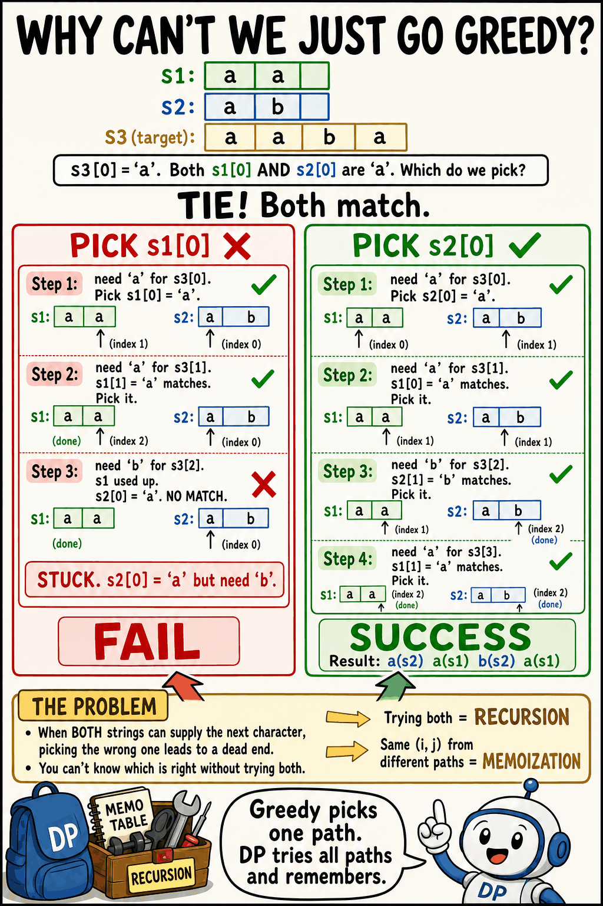
4 What Decision Am I Stuck On?
Freeze inside one recursive call
Imagine I've already consumed i characters from s1 and j characters from s2. That means s3 must have absorbed exactly i + j characters so far. Call that position k = i + j.
s3[k] is the next character I must produce, and I know exactly what it is. But I have TWO candidate sources sitting right in front of me: s1[i] and s2[j]. If both happen to equal s3[k], which one actually supplied it? I can't tell from the character alone.
![Frozen inside can_interleave(i, j): s3[k] needs a source, does it come from s1[i] or s2[j]?](dp/images/interleaving_frozen.png)
5 What Can I Do?
Check each candidate source, one at a time
There is no matching-pair concept here like in LCS. There's just one target character, s3[i+j], and up to two places it could have come from.
can_interleave(i+1, j).
can_interleave(i, j+1).
Notice this is not "skip a character" the way LCS skips a mismatch. There is no skipping. Every character of s3 must be accounted for by exactly one source, right now, at this position.
6 Why Only These Choices?
Test every idea a beginner might have
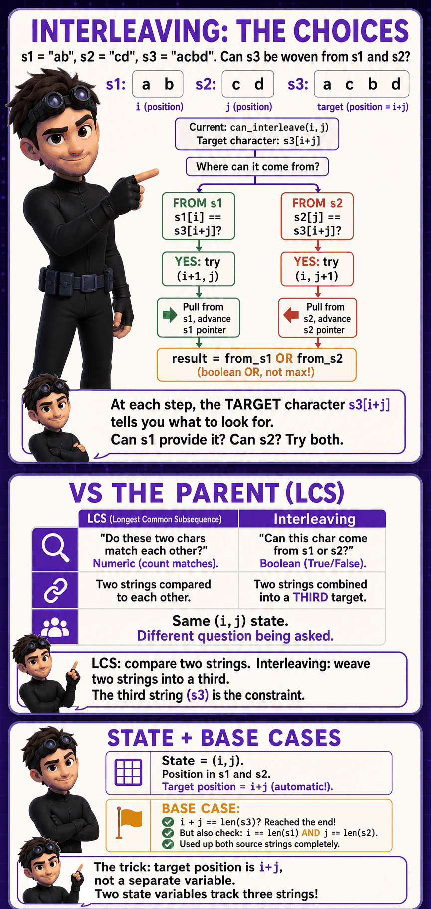
7 Watch Each Choice Play Out
Before writing recursion, simulate on the tie example
s1 = "aax", s2 = "aay", s3 = "aayaax". Start at i=0, j=0.
Branch A (take s1): can_interleave(1, 0) → s3[1]='a'. s1[1]='a' matches, s2[0]='a' matches. Tie again → take s1 again → can_interleave(2,0) → s3[2]='y'. s1[2]='x' no match, s2[0]='a' no match. Dead end. False.
Branch B (take s2): can_interleave(0, 1) → s3[1]='a'. s1[0]='a' matches, s2[1]='a' matches. Tie → try s2 first → can_interleave(0,2) → s3[2]='y'. s2[2]='y' matches! → can_interleave(0,3) → s3[3]='a'. s1[0]='a' matches (s2 exhausted) → keep going and it completes successfully. True.
can_interleave(0,0) returns True, even though Branch A failed.
The Choice Diagram
Current Situation: need to produce s3[i+j]
|
Does s1[i] match s3[i+j]? --YES--> try can_interleave(i+1, j)
|
also
|
Does s2[j] match s3[i+j]? --YES--> try can_interleave(i, j+1)
|
Neither matches? Dead end. False.
|
Return True if EITHER try returned True.8 What Must I Remember? (The State)
Pause the recursion. Another programmer takes over.
What information do they need to continue exactly where I stopped?
iji + j characters of s3. k is derived, not remembered.k = i + j is always derivable, so a third state variable for "position in s3" would be redundant.9 What Do the Variables Mean?
At i: The next unused character of s1.
Incrementing i means: s1[i] was just used to supply a character of s3.
At j: The next unused character of s2.
Incrementing j means: s2[j] was just used to supply a character of s3.
2 + 1 = 3 characters of s3 so far, and s3[3] is the very next character I need to explain. There is no way for k to be anything other than i + j: every character of s3 comes from exactly one of the two strings, so the count of characters used equals the count of characters produced.
i+j = 3, so s3[3] = 'a' is the character we need to explain next.
10 What Does the Function Promise?
Before writing a single line, state the contract in English
can_interleave(0, 0). "Can the full s1 and full s2 interleave to form the full s3?"
can_interleave(i+1, j), it must really answer "can s1[i+1:] and s2[j:] form s3[i+j+1:]?" That only works because k = i+j updates automatically to i+1+j.
11 When Must We Stop? (Base Cases)
If I keep making decisions, when must I eventually stop?
Don't look at the recurrence to find base cases. Ask: "What situation makes the answer trivially obvious?"
Why stop? The job was to explain every character of s3. If we're out of characters, we're done.
Return:
i == len(s1) and j == len(s2).Why check i and j too? Because the upfront length check guarantees len(s1)+len(s2) == len(s3). If i+j == len(s3), then (len(s1)-i) + (len(s2)-j) must equal 0, which forces i == len(s1) and j == len(s2). This condition is really just a safety statement of "both strings are also fully consumed," which is always true here, but it's the honest way to phrase what "done" means.
Why stop? There's nothing left to try from this state. Continuing would mean inventing a character out of nowhere.
Return:
False.This isn't really a separate "base case" line in code, it falls out naturally: if neither guarded if-branch fires, result simply stays False.
len(s1) + len(s2) != len(s3), return False immediately. No interleaving can ever produce a string of the wrong length, so don't waste a single recursive call finding that out the slow way.
12 What Smaller Problem Remains? (Transitions)
For each choice, what exactly changes and why?
i → i+1: s1[i] consumed. It produced the next character of s3.j stays the same: s2[j] wasn't touched. Still available.
can_interleave(i+1, j)i stays the same: s1[i] wasn't touched. Still available.j → j+1: s2[j] consumed. It produced the next character of s3.
can_interleave(i, j+1)
13 How Do We Combine Futures?
What exactly is the original question asking us to compute?
The problem asks "can s3 be formed," not "how many ways" or "what's the best way." That's an existence question. If EITHER the take-from-s1 path or the take-from-s2 path leads to success, the whole thing succeeds.
result_from_s1 OR result_from_s2. Why OR and not AND? We only need ONE valid interleaving to exist, not both branches to work. Why not max/min? There's no quantity to compare, only a yes/no per path.
"Longest / shortest" →
max() / min()."Count of ways" →
+."Does any way exist?" →
OR. That's exactly this problem.
14 The Recurrence
Now it writes itself
Every branch has already been justified. The recurrence is just a compact summary:
┌ i == len(s1) and j == len(s2) if i + j == len(s3)
can_interleave(i,j) =│ (s1[i]==s3[i+j] and can_interleave(i+1,j))
│ OR (s2[j]==s3[i+j] and can_interleave(i,j+1)) otherwise
└ False if neither condition ever firesNothing new here. Each line maps to reasoning we already understand:
15 Brute-Force Code
def can_interleave(s1, s2, s3, i, j):
if i + j == len(s3):
return i == len(s1) and j == len(s2)
result = False
if i < len(s1) and s1[i] == s3[i + j]:
result = can_interleave(s1, s2, s3, i + 1, j)
if not result and j < len(s2) and s2[j] == s3[i + j]:
result = can_interleave(s1, s2, s3, i, j + 1)
return resultDoes every call preserve the promise?
can_interleave(i+1, j): "Can s1[i+1:] and s2[j:] form s3[i+j+1:]?" ✓ s1[i] consumed and it matched s3[i+j].can_interleave(i, j+1): "Can s1[i:] and s2[j+1:] form s3[i+j+1:]?" ✓ s2[j] consumed and it matched s3[i+j].From Reasoning to Code
| Human Reasoning | Code |
|---|---|
| Function promise: "can the remaining suffixes interleave into the remaining target?" | def can_interleave(s1, s2, s3, i, j) returns a bool |
| State: two positions. k is derived. | Parameters i and j; target index is i + j, never a parameter |
| Stop when s3 is fully explained | if i + j == len(s3): return i == len(s1) and j == len(s2) |
| Check if s1 could be the source | if i < len(s1) and s1[i] == s3[i + j] |
| Check if s2 could be the source | if j < len(s2) and s2[j] == s3[i + j] |
| Goal: "does ANY interleaving work" = OR the branches | result = branch_s1 or branch_s2, short-circuited via not result |
16 Why Every Line Exists
Color-highlighted code walkthrough
def can_interleave(s1, s2, s3, i, j):
if i + j == len(s3):
return i == len(s1) and j == len(s2)
result = False
if i < len(s1) and s1[i] == s3[i + j]:
result = can_interleave(s1, s2, s3, i + 1, j)
if not result and j < len(s2) and s2[j] == s3[i + j]:
result = can_interleave(s1, s2, s3, i, j + 1)
return resultImplements the promise: "can s1[i:] and s2[j:] interleave into s3[i+j:]?" The function takes the state (i, j) as parameters and returns a boolean.
Step 12 proved: when s3 is fully explained, success means both strings are also exhausted. This line implicitly protects the array accesses below from going out of bounds too, since it only runs when i + j < len(s3).
Step 12 proved: if neither source matches, the answer is False. Starting here means we never need an explicit "else: return False" clause. It falls out naturally.
Step 13 proved: guarded by
i < len(s1) so we never index past the end. Only recurse if s1[i] actually matches the needed character.
Step 14 proved: guarded by
not result, a short-circuit. If s1 already found a working path, don't waste time checking s2, we only need ONE success (that's what OR means).
Step 14 derived: "does any interleaving work" means OR the two branches. Whatever succeeded (or didn't) is the final answer for this state.
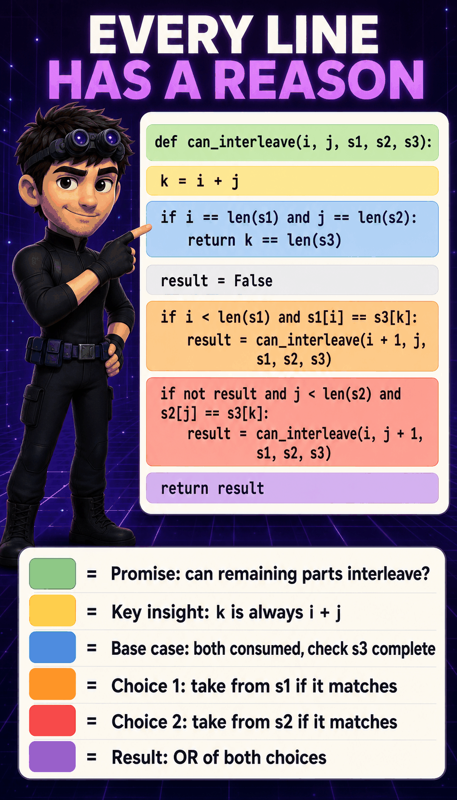
17 Concrete Execution Trace
Follow one example through every call and return
s1 = "ab", s2 = "cd", s3 = "acbd". Expected: True.
can_interleave(0, 0) k=0, s3[0]='a'. s1[0]='a' matches. s2[0]='c' doesn't.
try s1: can_interleave(1, 0)
can_interleave(1, 0) k=1, s3[1]='c'. s1[1]='b' no match. s2[0]='c' matches.
try s2: can_interleave(1, 1)
can_interleave(1, 1) k=2, s3[2]='b'. s1[1]='b' matches. s2[1]='d' no match.
try s1: can_interleave(2, 1)
can_interleave(2, 1) k=3, s3[3]='d'. s1 exhausted (i=2). s2[1]='d' matches.
try s2: can_interleave(2, 2)
can_interleave(2, 2) i+j=4=len(s3). i==len(s1) and j==len(s2). Return True.
Return True.
Return True.
Return True.
Return True.How does a boolean function without a running total return the final answer?
can_interleave(2,2) answers True because there's nothing left to explain. That True flows straight back up: no accumulation, no arithmetic, just propagation.

18 Why Is It Slow?
Where does repeated work appear?
Whenever s3[i+j] matches BOTH s1[i] and s2[j], the call branches in two directions. Different sequences of branch choices can land on the exact same (i, j) pair.
can_interleave("aax", "aay", "aayaax", 0, 0)
both match 'a': try (1,0) AND try (0,1)
(1,0): both match 'a' again: try (2,0) AND try (1,1)
(0,1): both match 'a' again: try (1,1) AND try (0,2)
+
(1,1) reached from BOTH paths!Without caching, every tie between s1[i] and s2[j] doubles the number of calls. For strings of length m and n, the worst case is O(2^(m+n)), exponential.
19 Memoization
Same state (i, j) always produces the same boolean. Cache it.
(i, j). The state. k is never part of the key, it's implied.def can_interleave(s1, s2, s3, i, j, cache):
if i + j == len(s3):
return i == len(s1) and j == len(s2)
if (i, j) in cache:
return cache[(i, j)]
result = False
if i < len(s1) and s1[i] == s3[i + j]:
result = can_interleave(s1, s2, s3, i + 1, j, cache)
if not result and j < len(s2) and s2[j] == s3[i + j]:
result = can_interleave(s1, s2, s3, i, j + 1, cache)
cache[(i, j)] = result
return resultBefore computing, check if (i, j) was already solved. If yes, return immediately.
After computing, save the result before returning. Future calls with the same (i, j) hit the lookup instead of re-exploring both branches.

20 Tabulation
Why the table dimensions come from the state
State = (i, j). Two state variables → two table dimensions. i ranges from 0 to len(s1). j ranges from 0 to len(s2). So the table is (len(s1)+1) × (len(s2)+1), exactly like LCS's table, even though this problem returns booleans, not counts.
Base cases become initialized cells
First row (i=0): only s2 supplies characters. table[0][j] = True only if table[0][j-1] is True AND s2[j-1] matches s3[j-1].
First column (j=0): only s1 supplies characters. table[i][0] = True only if table[i-1][0] is True AND s1[i-1] matches s3[i-1].
table[0][0] = True: nothing to interleave, nothing to form.
Which cells does each transition depend on?
table[i-1][j] (up, for "take from s1")table[i][j-1] (left, for "take from s2")No diagonal dependency this time (that's the LCS-specific move for a simultaneous match). Both dependencies are above or to the left. So filling row by row, left to right guarantees every dependency is already computed.
The filled table
s1 = "ab", s2 = "cd", s3 = "acbd":
| "" | c | d | |
|---|---|---|---|
| "" | T | T | F |
| a | T | T | F |
| b | F | T | T |
Green cells = the path that actually succeeds. Bottom-right = answer: True.
The rules at each cell
table[i-1][j] and s1[i-1] == s3[i+j-1]Only valid if s1's char matches the target AND the state before it was reachable.
table[i][j-1] and s2[j-1] == s3[i+j-1]Only valid if s2's char matches the target AND the state before it was reachable.
table[i][j] = take_from_s1 or take_from_s2. Same OR from Step 13, now expressed as boolean cell logic instead of recursive branching.
Walking through one row
j=0: table[1][0]=T and s1[1]='b' vs s3[1]='c'? No match. table[2][0] = False.
j=1 (s2[0]='c'): take_s1 = table[1][1]=T and s1[1]='b'==s3[2]='b'? Yes, True. take_s2 = table[2][0]=F and ... = False. table[2][1] = True.
j=2 (s2[1]='d'): take_s1 = table[1][2]=F and ... = False. take_s2 = table[2][1]=T and s2[1]='d'==s3[3]='d'? Yes, True. table[2][2] = True.
The code
def can_interleave(s1, s2, s3):
if len(s1) + len(s2) != len(s3):
return False
rows = len(s1)
cols = len(s2)
table = [[False] * (cols + 1) for _ in range(rows + 1)]
table[0][0] = True
for j in range(1, cols + 1):
table[0][j] = table[0][j - 1] and s2[j - 1] == s3[j - 1]
for i in range(1, rows + 1):
table[i][0] = table[i - 1][0] and s1[i - 1] == s3[i - 1]
for i in range(1, rows + 1):
for j in range(1, cols + 1):
from_s1 = table[i - 1][j] and s1[i - 1] == s3[i + j - 1]
from_s2 = table[i][j - 1] and s2[j - 1] == s3[i + j - 1]
table[i][j] = from_s1 or from_s2
return table[rows][cols]The length check from Step 11, now run once at the top instead of implicitly inside every call. table[0][0] = True is the only cell that starts True; everything else starts False.
These are the base cases where one string is completely unused. Each cell can only be True if the previous cell in the same row/column was True AND the next character matches. One mismatch anywhere breaks the whole row or column, since only one source is available.
Look up. Was (i-1, j) reachable, and does s1[i-1] supply the needed character?
Look left. Was (i, j-1) reachable, and does s2[j-1] supply the needed character?
OR the two options. Bottom-right corner: full s1, full s2. The answer to the original problem.

21 Space Optimization
Which previous states are actually needed?
Each cell uses exactly two neighbors: table[i-1][j] (the row above) and table[i][j-1] (the current row, one column back). No diagonal, no two-rows-back. Just like LCS but with one fewer dependency.
row[j-1] is already the NEW value from this same row (take from s2). row[j], before we overwrite it, is still the OLD value from the row above (take from s1). We must read row[j] before writing it.
def can_interleave(s1, s2, s3):
if len(s1) + len(s2) != len(s3):
return False
if len(s2) > len(s1):
s1, s2 = s2, s1
cols = len(s2)
row = [False] * (cols + 1)
row[0] = True
for j in range(1, cols + 1):
row[j] = row[j - 1] and s2[j - 1] == s3[j - 1]
for i in range(1, len(s1) + 1):
row[0] = row[0] and s1[i - 1] == s3[i - 1]
for j in range(1, cols + 1):
from_s1 = row[j] and s1[i - 1] == s3[i + j - 1]
from_s2 = row[j - 1] and s2[j - 1] == s3[i + j - 1]
row[j] = from_s1 or from_s2
return row[cols]22 Common Mistakes
if len(s1) + len(s2) != len(s3): return False, the recursion or tabulation may run against a target that can never be reached, wasting time or even reading past the end of s3.Detection: s1 = "a", s2 = "b", s3 = "ab" then s3 = "abc" crashes or loops instead of returning False cleanly.
def can_interleave(s1, s2, s3, i, j, k): ← WRONG (redundant)k is not new information. It's always
i + j. Carrying it separately invites bugs where i, j, and k drift out of sync after an update to only one of them.Detection: after incrementing i but forgetting to increment k, s3 lookups silently point at the wrong character.
s3[i + j] inside the tabulation loop ← WRONGIn tabulation, table[i][j] represents i and j characters already consumed, so the NEXT character to check is
s3[i + j - 1], not s3[i + j]. The recursive version uses 0-indexed i, j directly; tabulation shifts by one.Detection: IndexError, or the table quietly checks the wrong character and produces a False where True is correct.
if s1[i] != s3[i+j] and s2[j] != s3[i+j]: return can_interleave(i+1, j) ← WRONGThis problem has no skip move, unlike LCS. If neither source can supply the required character, that path is truly dead, not "try again later." Silently advancing i anyway fabricates a character that was never verified against s3.
Detection: the function returns True for interleavings that don't actually reconstruct s3 when you print the characters used.
return branch_s1 and branch_s2 ← WRONGWe need only ONE valid interleaving, not both branches to independently succeed (they can't both succeed simultaneously anyway, since taking from s1 and taking from s2 are alternatives for the SAME character, not two separate requirements).
Detection: valid interleavings that only work through one specific branch get rejected.
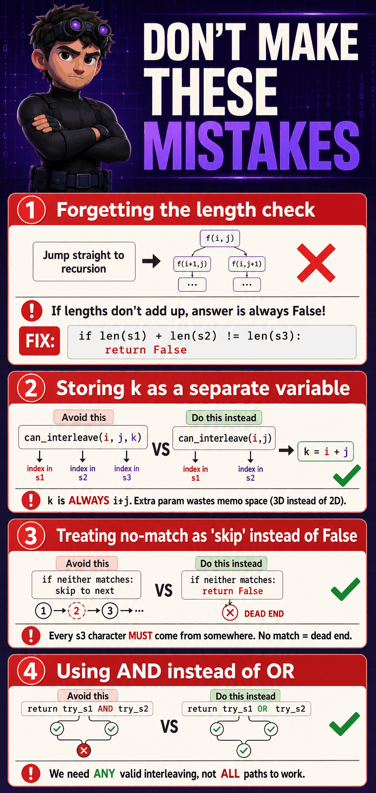
23 Pattern Recognition
"Can it be formed" = boolean existence question. Two source strings merging into one target = two dimensions. Greedy fails whenever both sources offer the same next character.
When s1[i] and s2[j] BOTH equal s3[i+j], I don't know which one actually supplied it. That uncertainty creates two branches.
Different tie-break sequences can land on the same (i, j) after consuming the same total number of characters from each string, even though they got there in a different order.
"Can it be formed" → OR(). "Count the ways" would mean addition. "Longest / shortest" would mean max/min.
Whenever a target sequence is built by merging two source sequences in order, the position in the target is always the SUM of how far you've progressed in each source. That's one fewer state dimension than you'd expect: 2D, not 3D.
When I see "two sources merge into one target, in order" + "does a valid arrangement exist", I should consider 2D boolean DP where the target index is derived, not stored, and branches are OR'd together.
Compare to LCS: both use a 2D grid over two input strings. But LCS's third string is the ANSWER (the subsequence itself, implicit in the count), while here the third string is a GIVEN constraint that must be matched exactly. That's why LCS can skip mismatches (nothing forces every character to be used) while Interleaving String cannot (every character of s3 must be explained by something).
24 Rediscover It Six Months Later
How would I reinvent this from scratch?
4 Distinct Subsequences
▶1 The Problem
source and target, return the number of distinct subsequences of source that equal target.source = "rabbbit", target = "rabbit" → 3
source has three b's. target needs two. Three different pairs of b's can be chosen.
source = "babgbag", target = "bag" → 5
three b's, two a's, two g's in source. Five distinct index-combinations spell "bag".
source = "aaa", target = "a" → 3
pick the first 'a', or the second, or the third. Three separate ways.
source = "xyz", target = "abc" → 0
not a single character of target appears in source. No way to spell it.
source = "abc", target = "abc" → 1
only one way: use every character of source, in order.
2 What Is It Really Asking?
Strip away the word "subsequence" for a moment. What am I actually being asked to count?
source left to right, marking some characters as used and the rest as skipped, such that the used characters, read in order, spell exactly target?"
Two ways are "different" if they use a different set of positions in source, even if the characters look identical. In source = "aaa", target = "a", using index 0 and using index 1 are different ways, even though both produce the letter "a".
Keep that asymmetry in mind. It shapes almost every decision in this problem.
3 What Would I Naturally Try?
The natural first instinct: scan source left to right. Keep a pointer into target. Whenever the current source character equals the next unmatched target character, grab it immediately and advance both pointers. When the target pointer reaches the end, I've found a subsequence.
That looks right, so it's tempting to generalize: "always grab a match the moment I see one." Seems reasonable, seems fast. Let's test it somewhere less trivial.
4 Where Does That Fail?
What went wrong?
Greedy treated "use the first match" as free, since using a match costs nothing and only helps. But that reasoning only holds if I'm trying to find one way. Here I need to count every way. Committing to one specific source index for target[0] silently throws away every other way that could have used a different index for target[0].

5 What Decision Am I Stuck On?
Freeze inside one recursive call
Imagine I'm standing at position i in source and position j in target. Everything before i has already been decided (used or skipped). Everything before j has already been matched. I look at source[i] and target[j], and they happen to be the same character.
source[i] equals target[j]. It's a valid, legal match right now. But should I use it to satisfy target[j], or skip it and hope a later occurrence of this same character also matches target[j]? Both are legal moves at this exact instant. I don't know which one (or both) contributes to the final count.
![Frozen at source[i] equals target[j]: a real match sits in front of me, do I use it now or skip it and wait for a later occurrence?](dp/images/distinct_subs_frozen.png)
6 What Can I Do?
Case 1: source[i] matches target[j]
Two genuinely different, both-legal moves.
count_ways(i+1, j+1).Skip it: save source[i] and hope a later character also matches target[j]. Only source advances. Move to
count_ways(i+1, j).
Case 2: source[i] does not match target[j]
source[i] cannot possibly stand in for target[j]. There's no decision to make. Only one legal move.
count_ways(i+1, j).
7 Why Only These Choices?
Test every idea a beginner might have
i only ever moves forward, one step at a time.
No match? Skip it. One branch. No decision left.
Notice:
j only ever advances when a character is actually used. i advances on every branch, since every step examines one more source character and decides its fate.
8 Watch Each Choice Play Out
Before writing recursion, simulate on a tiny example
source = "aab", target = "ab". Start at i=0, j=0.
USE: count_ways(1, 1) — target now needs just 'b' starting from source index 1.
SKIP: count_ways(1, 0) — target still needs "ab" starting from source index 1.
USE: count_ways(2, 1) → source[2]='b' matches target[1]='b'. Use it → count_ways(3,2) → 1.
SKIP: count_ways(2, 0) → source[2]='b' vs target[0]='a'. No match. Skip → count_ways(3, 0). i == len(source), j < len(target). Return 0.
So count_ways(1, 0) = 1 + 0 = 1 way (indices 1, 2).
The Choice Diagram
Current Situation: comparing source[i] and target[j]
|
Does source[i] match target[j]?
|
+----+----+
| |
YES NO
| |
Two real Only one legal move.
choices: Skip source[i].
+-- USE: count_ways(i+1, j+1)
+-- SKIP: count_ways(i+1, j) count_ways(i+1, j)
ADD both.
9 What Must I Remember? (The State)
Pause the recursion. Another programmer takes over.
What information do they need to continue exactly where I stopped?
ij10 What Do the Variables Mean?
At i: the character currently being decided.
source[i:] is everything still available to pick from.
Incrementing i means: source[i] was just handled (either used or skipped).
At j: the next target character that still needs a match.
target[j:] is everything still left to spell.
Incrementing j means: some source character was just used to satisfy target[j].
Faded = decided/matched. Highlighted = current position.
The function answers: "How many ways can I spell target[1:] = 'b' using characters from source[2:] = 'b'?"
11 What Does the Function Promise?
Before writing a single line, state the contract in English
count_ways(0, 0). "Number of ways to spell all of target using all of source."
12 When Must We Stop?
Before thinking about choices, ask: "When is the answer obvious without any recursion?"
Why stop? The job is already done, regardless of what's left in source.
Return:
1. This IS one complete, valid way.NOT 0. Reaching the end of target is success, so it counts as one way, even if source[i:] is empty too.
Why stop? There's nothing left to pick from. Impossible to finish spelling target.
Return:
0. No way to complete the match.Check j == len(target) FIRST. If both are exhausted at once, the correct answer is 1 (success), not 0.

13 What Smaller Problem Remains?
Two legal options. Count both paths.
i → i+1: source[i] consumed, used for the match.j → j+1: target[j] matched. Move to the next target character.
count_ways(i+1, j+1)i → i+1: source[i] discarded, not used.j stays the same: target[j] is still unmatched, waiting for a later source character.
count_ways(i+1, j)result = use + skip. Both are genuinely distinct sets of used positions, so both get counted.
i → i+1: source[i] discarded, useless for the current target character.j stays the same: target[j] still waiting to be matched.
count_ways(i+1, j)
14 How Do We Combine Futures?
What exactly is the original question asking us to compute?
The problem says "the number of distinct subsequences." That's a count, not a best-of. Every legal branch produces a different, valid set of used positions in source. None of them is "better" than another. I'm not choosing the winner. I'm counting all the winners.
count_ways(i+1, j+1) ways, skip contributes count_ways(i+1, j) ways. Every way counted by "use" is different from every way counted by "skip", because they disagree on whether source[i] is part of the subsequence.
use + skip. Why add and not max? Because I need the total count of every valid way, not the single best one. Max would throw away all but one path, undercounting exactly like greedy did in Step 4.
"Longest / shortest" (LCS, Edit Distance) →
max() / min(). Choosing one best path."Number of distinct ways" (this problem) →
+. Counting every valid path."Does any way exist?" →
OR.
15 The Recurrence
Now it writes itself
Every branch has already been justified. The recurrence is just a compact summary:
┌ 1 if j == len(target)
count_ways(i,j)=│ 0 if i == len(source)
│ count_ways(i+1,j+1) + count_ways(i+1,j) if source[i] == target[j]
└ count_ways(i+1,j) otherwise16 Brute-Force Code
def count_ways(source, target, i, j):
if j == len(target):
return 1
if i == len(source):
return 0
ways = count_ways(source, target, i + 1, j)
if source[i] == target[j]:
ways += count_ways(source, target, i + 1, j + 1)
return waysFrom Reasoning to Code
| Human Reasoning | Code |
|---|---|
| Function promise: "ways to spell target[j:] from source[i:]" | def count_ways(source, target, i, j) returns an int |
| State: two positions | Parameters i and j |
| Stop when target is fully matched | if j == len(target): return 1 |
| Stop when source runs out first | if i == len(source): return 0 |
| Skip is always a legal move | ways = count_ways(..., i + 1, j) |
| Check if using source[i] is legal | if source[i] == target[j]: |
| If legal, add the "use it" count too | ways += count_ways(..., i + 1, j + 1) |
| Goal: "count of ways" = total, not best | return ways |
17 Why Every Line Exists
Color-highlighted code walkthrough
def count_ways(source, target, i, j):
if j == len(target):
return 1
if i == len(source):
return 0
ways = count_ways(source, target, i + 1, j)
if source[i] == target[j]:
ways += count_ways(source, target, i + 1, j + 1)
return waysImplements the promise: "ways to spell target[j:] using source[i:]." Takes the state (i, j) as parameters and returns an integer.
Step 12 proved: target fully matched means success, return 1. source exhausted with target left means failure, return 0. Order matters, target check comes first.
Step 7 proved: skipping source[i] is always legal, match or not. So it's computed unconditionally, before even checking for a match.
Step 5 discovered: the pivotal question at every call is "does source[i] equal target[j]?" This condition decides whether a second option even exists.
Step 14 derived: "count of ways" means addition. This line only runs on a match, and it's the moment the "use it" path's count gets folded into the total. Remove this line and every answer collapses to "does target appear as a subsequence at all" (0 or 1), losing the count entirely.
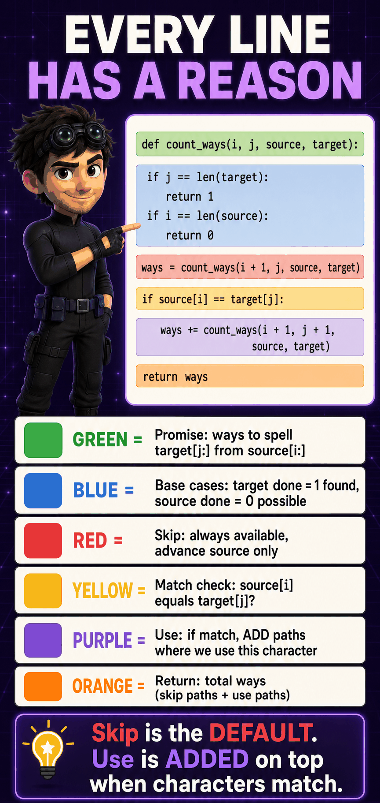
18 Concrete Execution Trace
Follow one example through every call and return
source = "aab", target = "ab". Expected answer = 2.
count_ways(0, 0) source[0]='a', target[0]='a'. Match!
ways = count_ways(1, 0) (skip branch, always computed first)
source[1]='a', target[0]='a'. Match!
ways = count_ways(2, 0)
source[2]='b', target[0]='a'. No match.
ways = count_ways(3, 0) i==len(source)=3, j=0<2. Return 0.
Return 0. (count_ways(2,0) = 0)
ways += count_ways(2, 1)
source[2]='b', target[1]='b'. Match!
ways = count_ways(3, 1) i==3, j=1<2. Return 0.
ways += count_ways(3, 2) j==2==len(target). Return 1.
ways = 0 + 1 = 1 (count_ways(2,1) = 1)
ways = 0 + 1 = 1 (count_ways(1,0) = 1)
ways += count_ways(1, 1)
source[1]='a', target[1]='b'. No match.
ways = count_ways(2, 1) ← same call as above, recomputed from scratch
[identical work repeats] → 1
Return 1. (count_ways(1,1) = 1)
ways = 1 + 1 = 2
Return 2. (count_ways(0,0) = 2)count_ways(0, 0) holds the final answer, 2.
count_ways(2, 1) got computed twice: once reached through "skip then use", once through "use then skip." Different decision paths, same remaining subproblem.

19 Why Is It Slow?
Where does repeated work appear?
The trace above already caught it: count_ways(2, 1) was computed twice, once from count_ways(1, 0)'s match branch, once from count_ways(1, 1)'s skip branch. Different sequences of decisions, same (i, j) landing spot.
Every match creates two branches. With k matching characters along the way, the call tree can branch up to 2^k times, and many of those branches collide on the same (i, j) pair, especially when source has repeated characters (like "aaa" or "bbb"), which is exactly the case this problem is built around.
20 Memoization
def count_ways(source, target, i, j, cache):
if j == len(target):
return 1
if i == len(source):
return 0
if (i, j) in cache:
return cache[(i, j)]
ways = count_ways(source, target, i + 1, j, cache)
if source[i] == target[j]:
ways += count_ways(source, target, i + 1, j + 1, cache)
cache[(i, j)] = ways
return waysO(len(source) × len(target)).

21 Tabulation
count_ways(i, j) = number of ways to spell target[j:] using source[i:].Row i ranges 0 to len(source). Col j ranges 0 to len(target).
Base cases in the table:
table[i][len(target)] = 1 for every i: an empty remaining target is always already spelled.table[len(source)][j] = 0 for j < len(target): an empty remaining source can never finish a non-empty target.
Because count_ways(i, j) is defined on suffixes (source[i:], target[j:]), table[i][j] depends on row i+1, the row for one more character consumed. So rows must be filled from the bottom up: start at i = len(source) and work back to i = 0. This is the mirror image of LCS's forward fill, and it falls straight out of the same forward-indexing recursion, no re-deriving needed.
def count_ways(source, target):
source_length = len(source)
target_length = len(target)
table = [[0] * (target_length + 1) for _ in range(source_length + 1)]
for i in range(source_length + 1):
table[i][target_length] = 1
for i in range(source_length - 1, -1, -1):
for j in range(target_length - 1, -1, -1):
table[i][j] = table[i + 1][j]
if source[i] == target[j]:
table[i][j] += table[i + 1][j + 1]
return table[0][0]Line by line, this is the recurrence with count_ways(i+1, j) renamed to table[i+1][j], and count_ways(i+1, j+1) renamed to table[i+1][j+1]. Nothing new was invented, only the recursive calls became array lookups.
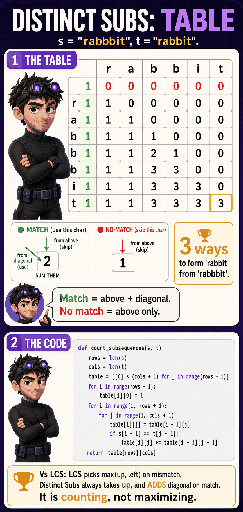
22 Space Optimization
Every cell table[i][j] only reads from row i+1. Row i never reads from itself. That means one row can be reused for every value of i, as long as it's updated in the right direction.
table[i][j] depends on row[j] and row[j+1], both still holding old (row i+1) values. If j is updated in increasing order (0, 1, 2, ...), then when row[j] is written, row[j+1] hasn't been touched yet this round, so it's still the old value. Updating j in decreasing order would corrupt row[j+1] before it's read. This is the opposite direction from problems where matches read from j-1.
def count_ways(source, target):
source_length = len(source)
target_length = len(target)
row = [0] * (target_length + 1)
row[target_length] = 1
for i in range(source_length - 1, -1, -1):
for j in range(target_length):
if source[i] == target[j]:
row[j] += row[j + 1]
return row[0]Trace it on source="aab", target="ab": start row = [0, 0, 1]. i=2 ('b'): j=1 matches, row becomes [0, 1, 1]. i=1 ('a'): j=0 matches, row becomes [1, 1, 1]. i=0 ('a'): j=0 matches, row becomes [2, 1, 1]. Return row[0] = 2. Same answer, O(len(target)) space instead of O(len(source) × len(target)).
23 Common Mistakes
return max(use, skip) ← WRONGThat's the LCS habit. This problem counts ways, it doesn't choose a best one. Every legal branch is a distinct, valid answer that must be added, not compared.
Detection: count_ways("aaa", "a") returns 1 instead of 3.
if source[i] != target[j]: return count_ways(i+1, j+1) ← WRONGtarget[j] can only be considered matched when a source character was actually used for it. A mismatch means nothing happened to target; only source moves.
Detection: answers become smaller than they should be, or even negative-feeling nonsense on strings with no common characters.
if j == len(target): return 0 and if i == len(source): return 1 ← WRONGBackwards. Finishing target is success (1). Running out of source first is failure (0).
Detection: count_ways("abc", "abc") returns 0 instead of 1.
if source[i] == target[j]: return count_ways(i+1, j+1) ← WRONG (missing the skip term)This is the exact greedy failure from Step 4. It finds at most one way per state instead of adding in every duplicate-character alternative.
Detection: count_ways("aab", "ab") returns 1 instead of 2.
j from high to low overwrites row[j+1] with a new (row i) value before it's read for row[j], silently corrupting the count.Detection: the 1D version disagrees with the 2D tabulation on the same input, usually undercounting.

24 Pattern Recognition
"Number of distinct ways" = counting. Two strings = two dimensions. Greedy fails because an early commitment to one match blocks other valid completions.
At a match, I don't know whether using this exact index or saving it for a later duplicate leads to more total completions. That uncertainty is exactly why both get explored and added.
"Use then skip" and "skip then use" can land on the exact same (i, j). Same remaining suffixes, different history.
"Number of ways" →
+. "Longest" would mean max(). "Fewest operations" would mean min().
source and target don't play the same role. source is negotiable, characters can be used or skipped. target is fixed, every character must be matched, none can be skipped. That one-sided skipping is what separates this problem's shape from LCS's two-sided skipping.
When I see "count the number of distinct ways" + "subsequence" + one string that must be fully matched against another that can be partially used, I should consider one-sided-skip counting DP with addition.
25 Rediscover It Six Months Later
How would I reinvent this from scratch?
The 2D Table Pattern
Same grid, different cell formula
| Problem | Match | No Match | Base |
|---|---|---|---|
| LCS | diag + 1 | max(up, left) | 0's |
| Edit Distance | diag + 0 | 1 + min(diag, up, left) | row/col index |
| Distinct Subs | diag + up | up | first col = 1 |
| Unique Paths | always: up + left | 1's on edges | |
| Interleaving | check s3[i+j-1] from s1 (up) or s2 (left) | prefix match | |